안녕하세요. 마브님과 팩님 인터뷰에 참여해 주셔서 감사합니다. 간단하게 자기소개 부탁드릴게요.
마브 안녕하십니까? 한국에서 아프로비츠 포함해서 다양한 음악들을 시도하고 만들고 있는 마브라고 합니다.
팩 안녕하세요. 아프로비츠를 기반해서 여러 가지 음악들을 시도하고 있는 팩이라고 합니다.
쇼미더머니 12 출연 이후로 바쁘게 보내고 계신 것 같아요. 요즘 근황은 어떠신가요?
마브 저는 원래부터 일이 좀 많았으면 좋겠다고 생각했는데, 요즘 많은 일을 벌릴 수 있는 기회가 많이 생겨서 행복하게 살고 있습니다(웃음).
팩 저도 제 커리어를 킥스타트 할 수 있는 계기가 생긴 것 같아서 작은 불씨를 놓치지 않으려고 여러 가지 열심히 해보려 노력하고 있습니다.
오늘은 두 분이서 발표한 싱글 “VooDoo”를 중심으로 이런저런 이야기를 나눠볼 것 같습니다. 먼저 두 분이서 처음 만나게 된 계기가 궁금해요.
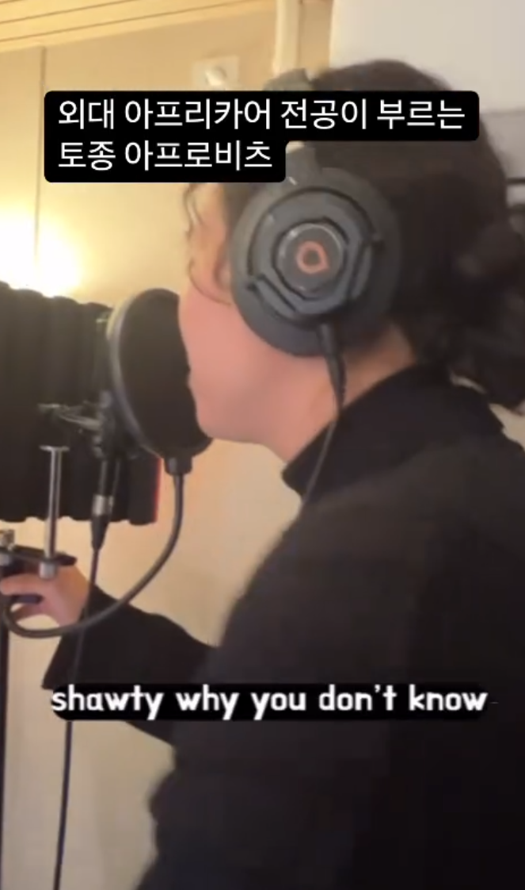
팩 저는 원래 인스타 릴스 바이럴을 통해서 운이 좋게 이름이 알려진 케이스예요. 이런 음악을 하는 사람들이 누가 있는지 디깅을 하다 마브의 “Td up”이라는 노래를 찾게 되었어요. 제가 먼저 마브한테 DM을 보냈고, [Souly. (deluxe)] 파티에서 안면을 튼 기억이 나네요.
마브 저도 팩을 릴스를 통해 처음 알게 됐어요. 아프리카어를 전공한 데다 소박한 작업실에서 친구들끼리 모여 뭔가를 만들어가는 모습이 인상적이었는데, 저 역시 비슷한 환경에서 작업하고 있었던 터라 더 공감이 갔던 것 같아요. 나중에 알고 보니 나이도 동갑이었고요.
더 가까워지게 된 계기는 아무래도 <쇼미더머니 12>에서 이야기를 많이 나누면서였던 것 같아요. 음악뿐 아니라 인간적으로도 서로 통하는 부분이 있었거든요. 꿈도 많고 순수한 열정도 있고, 색깔이 서로 비슷하다고 느꼈어요. 그래서 요즘은 곡 작업도 같이 하고 사석에서 만나는 일도 많아졌습니다.
서로 처음 알게 된 시기는 쇼미더머니 전이었군요. 본격적으로 친해진 때가 쇼미 이후였나요?
마브 처음에는 팩이랑 뜨뜻미지근한 관계였어요. 서로 응원하고 있으니까 친해질 포텐셜은 보였는데, 결정적인 계기가 딱히 없었던 거죠. 근데 팩이 졸업 논문에 페노메코 형을 비롯한 한국 아프로 아티스트들을 소개하면서 제 앨범과 이름도 넣어줬거든요. 졸업 논문에 제 이름을 넣었다는 건 저한테 엄청난 사랑을 보낸 거잖아요(웃음). 지금도 논문 검색하면 제가 나오는 게 너무 신기해요.
이러다 쇼미더머니 듀엣 미션에서의 매칭이 결정적인 계기가 되었죠. 당시 팀을 맺는 방식이 제가 앞에 나와 있으면, 함께 작업하고 싶은 사람이 올라오는 방식이었어요. 그때 제 머릿속에는 딱 두 가지 생각밖에 없었거든요? 하나가 비트 중에 아프로비츠 비트 하나 있었으면 좋겠다는 것, 그리고 다른 하나는 팩이 와줬으면 좋겠다는 것. 근데 정말 신기하게도 아프로비츠 비트도 있고, 팩과도 함께하게 된 거예요(웃음). 그림이 딱 나온 거죠. 그때를 계기로 급속도로 가까워졌고, 지금까지 이어졌습니다. 이 과정에서 나온 곡이 바로 “VooDoo”예요.
재밌는 인연이네요(웃음). 두 분 모두 아프로 뮤직을 기반으로 작업하고 계시잖아요. 방금 말씀해주신 아프로비츠(Afrobeats)가 어떤 장르인지 설명 부탁드려도 괜찮을까요?
팩 정말 쉽게 이야기하면, 한국에 케이팝이 있는 것처럼 나이지리아를 대표하는 대중음악이라고 이해하시면 편할 것 같아요. 물론 나이지리아도 다양한 문화가 공존하고, 각 지역마다 고유한 리듬과 음악적 전통이 존재하죠. 그런 요소들이 발전해 오다가 현대 팝과 결합하면서 지금 우리가 알고 있는 아프로비츠가 만들어졌어요.
마브 팩이 설명한 게 정확하고요. 거기에 조금만 덧붙이자면, 요즘은 아프로비라는 단어의 쓰임새가 예전보다 훨씬 넓어졌다고 생각해요. 원래는 나이지리아 중심의 음악을 말하는 성격이 강했는데, 지금은 아프로팝이나 아프로뮤직의 영역까지 아프로비츠라는 단어로 포괄하는 경우가 많아졌거든요.
예를 들어 Tyla나 Asake 음악에서 접할 수 있는 아마피아노라는 장르가 있어요. 남아프리카공화국에서 뻗어 나온 음악인데, 요즘은 이런 음악까지도 아프로비츠로 묶여 소개되는 경우가 많아요. 아마 스트리밍 서비스나 플레이리스트 큐레이션 측면에서 그렇게 분류하는 게 더 편리하기 때문인 것 같은데. 그래서 지금의 아프로비츠라는 단어는 아프리카 전역에서 나온 다양한 음악을 팝적으로 풀어낸 장르로 포괄하는 용어에 가깝다고 생각해요.
팩 어떻게 보면 케이팝이라는 단어가 쓰이는 방식과 비슷한 것 같죠.
그렇네요. 나이지리아 팝이라고 설명하면 가장 이해하기 쉬울 것 같기도 하고요.
마브 그래서 개인적으로는 아프로비츠보다는 아프로뮤직(Afro Music)이나 아프로팝(Afropop)이라는 표현이 조금 더 정확하다고 생각해요.
여러 아프리카 음악들이 아프로비츠라는 이름 아래 묶이는 현상은 어떻게 생각하세요?
마브 저는 다문화주의를 이야기할 때 나오는 ‘용광로’와 ‘샐러드볼’ 비유랑 비슷하다고 생각해요. 개인적으로는 용광로 쪽을 더 지지하는 입장이고요. 너무 세세하게 나누기 시작하면 아프로 뮤직에 익숙하지 않은 사람들은 시작부터 너무 어려워져요. 결국 음악도 하나의 소비재인데, 어려울수록 접근성은 떨어질 수밖에 없잖아요. 남아 있는 사람들의 이해도는 깊어질 수 있겠지만, 그만큼 규모는 작아질 수밖에 없다고 생각해요. 그래서 저는 이런 현상에 크게 거부감은 없어요. 사람들이 편하게 접근할 수 있으니까요.
팩 저도 비슷하게 생각하고 있어요. 가장 중요한 건 진입장벽을 낮추는 거라고 보거든요. 사실 이 장르 자체가 비교적 낯설기도 하고요. 처음 접하는 사람들에게 친숙하게 다가가기 위해서는 어느 정도 공통된 라벨링이 필요하다고 생각해요.
그러면 아프로뮤직의 진입장벽은 왜 생기는걸까요?
팩 일단 언어의 영향이 크죠. 사용하는 언어 자체가 다르니까요.
마브 문화적인 차이도 굉장히 크다고 생각해요. 사실 동양권에서는 아직 아프로뮤직이 대중화됐다고 보기 어렵거든요. 제가 해외에서 공연을 보거나 직접 느꼈던 차이가 하나 있어요. 한국은 클럽같은 장소에서 DJ가 직접 유도하지 않는 이상 자연스럽게 떼창이 나오는 경우는 많지 않아요. 그런데 인도네시아나 시드니 같은 곳에 가보면 관객들이 정말 자연스럽게 떼창을 하고, 다 같이 춤을 춰요. 단순히 몸을 흔드는 정도가 아니라, 관객 스스로 무대의 일부처럼 참여하거든요. 저는 아프로뮤직이 원래 그런 문화에서 나온 음악이라고 생각해요. 특정 아티스트 한 명을 중심으로 소비되는 구조보다는, 모두가 함께 만드는 축제에 가까운 거죠. 관객도 하나의 플레이어가 되어 무대를 완성하는 문화.
그리고 또 하나는 제가 관련 자료를 찾아보다가 ‘아프로퓨처리즘(Afrofuturism)’이라는 개념을 알게 됐어요. ‘서구화’라는 표현 많이 쓰잖아요. 그런데 이 표현 자체가 서양의 시선을 기준으로 둔 것이다 보니 아프리카로서는 불편할 수밖에 없죠. 노예무역과 식민지 경험을 거치면서 서구 사회 발전의 밑바탕이 되어주었지만, 정작 자신들은 주변부로 남았으니까요. 그래서 아프로퓨처리즘이라는 문화 안에는 “만약 우리가 침략당하지 않았다면 어떤 미래를 만들었을까?” 같은 상상이 담겨 있는 경우가 많아요. 영화 <블랙 팬서>가 대표적인 예죠. 전통적인 아프리카 문화와 최첨단 미래 기술이 공존하는 세계관 말이에요. 아프로뮤직의 성공은 단순한 음악적 성공을 넘어 문화적 자존심과도 연결된 부분이 있다고 생각해요. 물론 지금 이야기한 건 어디까지나 제가 공부하면서 느낀 생각들을 조합한 거라 절대적인 정답은 아닙니다(웃음).
근데 한국은 이런 아프리카가 가진 역사, 문화적 맥락이나 감정선에 대한 공감대가 상대적으로 약할 수 있다고 생각해요. 음악적으로 봐도 아프로뮤직 특유의 폴리리듬 같은 구조가 바로 익숙해지지는 않을 것 같기도 하고요. 몸에 자연스럽게 배기까지 시간이 필요한 음악이라고 생각해요. 그래서 저는 언어, 문화, 공연 문화의 차이, 그리고 리듬에 대한 익숙함의 문제까지 여러 요소가 겹쳐서 지금의 진입장벽이 만들어진다고 생각합니다.
팩 마브 이야기의 연장선으로 볼 수도 있을 것 같은데, 선입견의 문제도 굉장히 큰 것 같아요. 우리가 주류 미디어를 통해 접하는 아프리카의 이미지는 대부분 가난, 전쟁, 질병 같은 것들이잖아요. 그러다 보니까 많은 사람들이 지금의 아프로뮤직 같은 세련된 음악이 아프리카에서 나온다는 사실 자체를 쉽게 상상하지 못하는 것 같아요. 실제로 Tyla도 미국 뮤지션이라고 생각하는 분들이 꽤 많거든요. 나아가 아프리카 음악이라고 하면 “이거 그냥 원시적인 음악 아니야?”라고 생각하는 경우도 아직 종종 보고요. 물론 아주 극단적인 사례지만요.
특히 한국은 최근 들어 이민자가 늘고 있다고는 하지만, 여전히 다양한 문화권 사람들과 일상적으로 접촉하는 나라라고 보기는 어렵잖아요. 그러다 보니 자연스럽게 그 문화를 직접 경험하거나, 친구가 되어 소개받을 기회도 상대적으로 적어요. 유럽이나 북미처럼 다양한 문화권 사람들이 가까이에서 어울리면서 자연스럽게 음악을 추천해 주고, 문화를 공유할 수 있는 환경과는 조금 다르다고 생각해요. 그래서 우리는 결국 멀리서 거대 미디어가 보여주는 이미지를 통해 아프리카를 인식하게 되고, 그 결과 ‘아프리카의 음악은 가난한 나라의 음악’이라는 고정관념이 생기는 것 같아요.
마브 사실 Tyla나 Wizkid같은 아티스트들이 세계적으로 주목받기 전까지만 해도, 많은 사람들에게 아프로뮤직은 ‘제3세계 음악’이라는 이미지가 강했던 거죠. 근데 지금은 그런 인식이 조금씩 바뀌고 있는 과정이라고 생각해요.
말씀해주신 아티스트들이 주목받기 시작하면서 아프로 뮤직 자체에 대한 관심도도 높아졌죠. 지금은 어느 정도 구분해서 사용하는 분위기가 생겼지만 국내에 처음 이 음악이 소개될 때만 해도 아프로비트(Afrobeat)와 아프로비츠(Afrobeats)를 혼용해서 쓰는 경우가 굉장히 많았어요. 두 장르의 차이를 설명해 주시면 좋을 것 같습니다.
팩 큰 틀에서 보면 아프리카로부터 비롯된 음악이기에 둘 다 비슷하게 느껴질 수 있어요. 힙합으로 비유하면 조금 이해가 쉬울 것 같은데, 아프로비츠(Afrobeats)가 지금 대중적으로 소비되는 현대 음악이라면, 아프로비트(Afrobeat)는 그 뿌리에 가까워요. 트랩 같은 지금의 힙합과 1990년대 투팍의 음악 같은 컨셔스 힙합을 비교하는 느낌이라고 할까요.
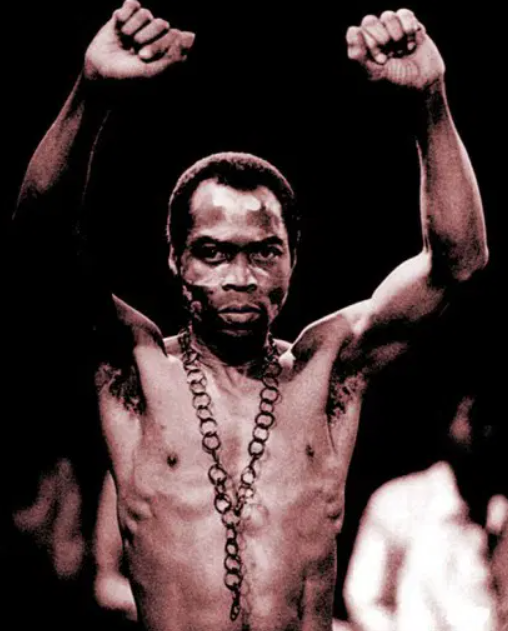
아프로비트의 중심에는 Fela Kuti라는 인물이 있어요. 사실상 이 장르를 만든 장본인이라고 볼 수 있는 뮤지션이죠. 개인적으로는 Bob Marley와 비슷한 위치에 있다고 생각해요. 사회가 가진 문제나 정치권력에 대한 비판을 음악으로 이야기했고, 실제로 여러 차례 탄압을 받기도 했어요. 그 이후 세대의 뮤지션들이 Fela Kuti의 음악을 바탕으로 새로운 방향을 고민하기 시작한 거예요. 세상과 경쟁하고 성공하려면 문화를 통해야 한다는 생각 아래 기존 아프로비트에 다른 장르의 문법을 섞기 시작한 거죠. 이것이 영국을 비롯한 여러 나라에서 주목받았고, 그렇게 발전해 온 결과물이 지금의 아프로비츠예요.
마브 좀 더 음악적으로 설명해 보면, 아프로비트는 기본적으로 밴드 음악에 가까워요. 우리가 흔히 떠올리는 브라스 중심의 빅밴드 사운드가 강하고, 재즈와 펑크의 영향도 굉장히 많이 받았죠. 이 음악에는 퍼커션 중심의 폴리리듬, 긴 연주 구간, 즉흥성 같은 요소들이 살아 있어요. 재즈 밴드 공연과 비슷하게 악기 연주 자체가 중심이 되는 경우도 많고요. 나아가 아티스트 개인보다 밴드 전체의 에너지나 메시지가 중심이 되는 경우가 많아요. 옛 레게 음악처럼 사회적 메시지를 전달하는 프리칭의 성격도 강하고 관객과 끊임없이 상호작용하는 문화도 남아 있고요. 그리고 지금도 완전히 사라진 장르는 아니에요. Fela Kuti의 아들인 Seun Kuti가 Egypt 80이라는 밴드를 이끌며 여전히 아프로비트 음악을 이어가고 있거든요.
반면 아프로비츠는 대중음악에 가까워요. 팝, 힙합, R&B 같은 현대 음악의 문법을 적극적으로 받아들이면서 보다 짧고 직관적인 곡 구조를 갖게 됐죠. 남미 음악으로 비유하면 레게(Reggae)와 뭄바톤(Moombahton)의 관계와도 비슷한 것 같아요. 레게가 뿌리에 해당하고 뭄바톤은 그 영향을 받아 현대적으로 발전한 음악인 것처럼, 둘은 연결되어 있으면서도 분명히 다른 음악이잖아요.
두 분 모두 아프로 뮤직 기반의 작업을 하고 계시지만, 실제 음악 스타일은 꽤 다르게 느껴지기도 해요. 서로의 음악 스타일은 어떻게 보고 계신가요?
마브 저는 팩 음악을 들으면 굉장히 정교하다는 느낌을 많이 받아요. 팩은 아프로뮤직을 굉장히 깊게 공부했고, 장르적인 이해도도 높은 친구거든요. 그래서 곡 안에 들어가는 리듬이나 보컬 톤, 사운드 선택 같은 것들이 굉장히 디테일해요. 본인이 좋아하는 문화에 대한 존중도 확실하고요. 저는 팩 음악을 들을 때 “진짜 이 장르를 사랑하는 사람이구나”라는 느낌을 많이 받아요.
반면 저는 조금 더 직관적으로 접근하는 편인 것 같아요. 장르의 문법을 기반으로 삼긴 하지만, 결국 제가 좋아하는 방향으로 계속 비틀고 섞으려고 하거든요. 그래서 어떤 사람들은 제 음악을 듣고 “이게 진짜 아프로뮤직이 맞냐?”라고 느낄 수도 있을 것 같아요. 근데 저는 오히려 그런 지점이 재밌어요. 한국에서 음악을 만드는 이상 결국 한국적인 감각이나 제 취향이 섞일 수밖에 없다고 생각하거든요.
팩 저도 비슷하게 느껴요. 마브는 굉장히 감각적인 사람이에요. 사실 장르라는 건 어느 정도 공부하면 누구나 접근할 수 있는데, 결국 마지막에는 센스가 되게 중요하다고 생각하거든요. 마브는 그 감각이 진짜 좋은 사람이에요. 어떤 사운드를 골라야 하는지, 어떤 무드가 지금 재밌는지에 대한 감각이 빠르죠. 그래서 저는 오히려 마브 음악을 들으면서 많이 배우는 편이에요.
그리고 저는 아무래도 장르적인 정통성을 중요하게 생각하는 편이에요. 제가 이 음악을 좋아하게 된 이유 자체가 문화와 역사에 대한 흥미에서 시작됐거든요. 그래서 최대한 그 결을 이해하려고 노력하는 편이에요. 근데 또 동시에 한국에서 활동하는 이상 완전히 현지 음악처럼 만들 수도 없다고 생각해요. 결국 우리는 한국인이고, 한국에서 살아온 감각이 음악 안에 자연스럽게 들어갈 수밖에 없으니까요.
말씀을 듣다 보니 두 분이 서로 다른 방향성을 가지고 있어서 더 좋은 시너지가 나오는 것 같다는 생각이 드네요. 실제로 함께 작업할 때는 어떤 방식으로 진행되는지도 궁금합니다.
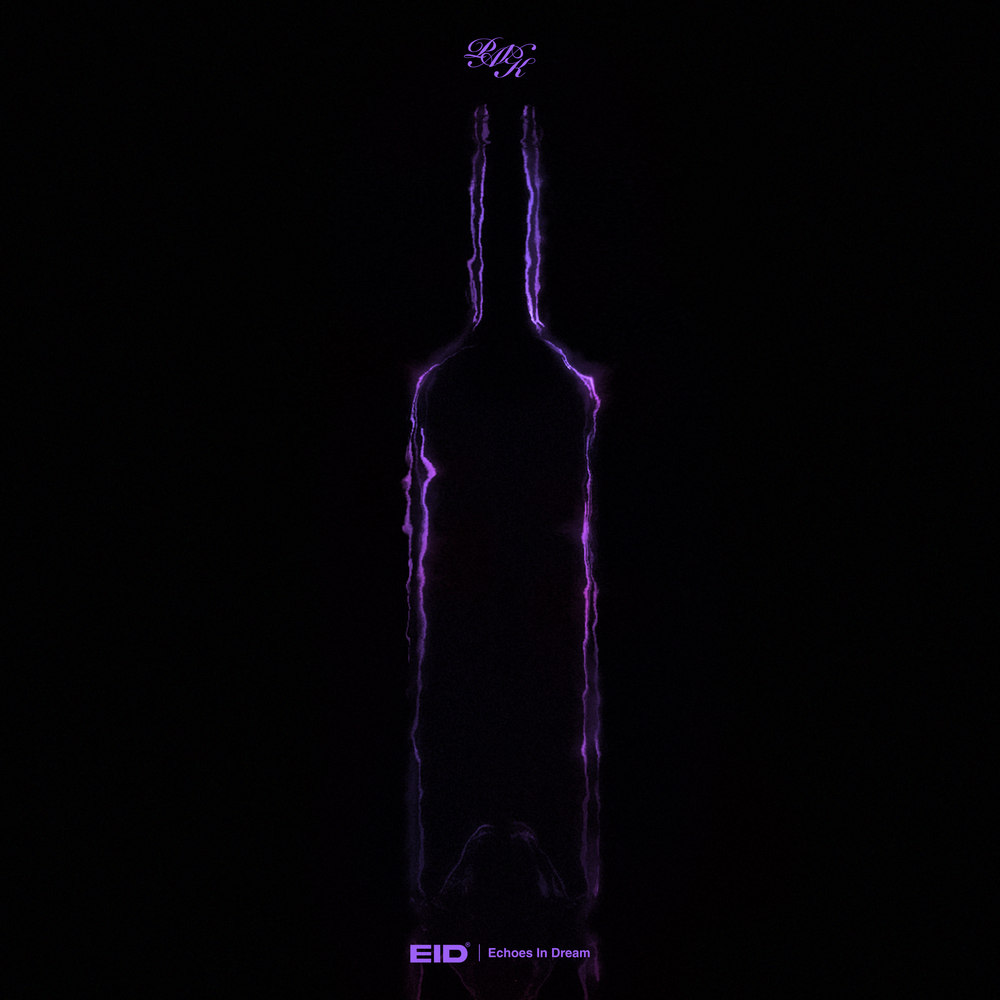
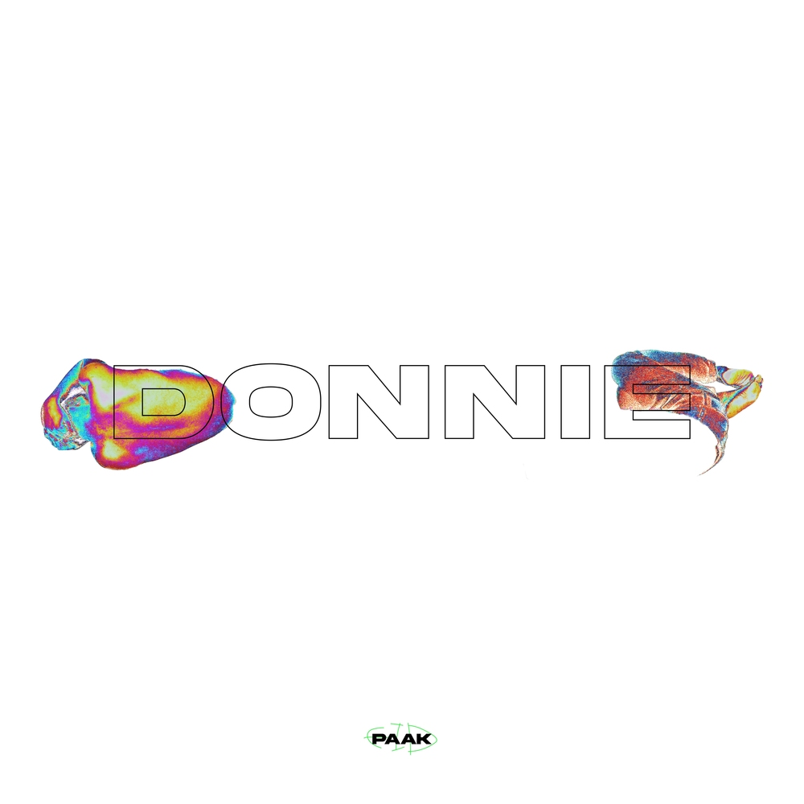
팩 진짜 많이 이야기하는 것 같아요. 그냥 음악 이야기만 하는 게 아니라 요즘 뭐에 꽂혀 있는지, 어떤 무드를 좋아하는지, 최근에 본 영화나 패션 같은 것까지 다 이야기해요. 그러다 보면 자연스럽게 곡의 분위기가 정해지는 것 같아요.
마브 맞아요. 그리고 작업 방식 자체는 생각보다 굉장히 자유로운 편이에요. 누가 메인이고 서브고 이런 개념이 별로 없어요. 어떤 날은 팩이 중심이 되어 끌고 가고, 어떤 날은 제가 아이디어를 더 많이 내기도 하고요. 서로 계속 주고받으면서 곡을 만드는 느낌에 가까워요.
사실 저는 같이 작업할 때 가장 중요한 게 “이 사람과 시간을 보내는 게 재밌냐”인 것 같아요. 아무리 음악을 잘해도 같이 있는 시간이 불편하면 결국 좋은 결과물이 잘 안 나오더라고요. 근데 팩은 그냥 인간적으로도 너무 재밌는 친구라서 작업 자체가 되게 즐거워요.
팩 저도 똑같이 느껴요. 마브랑 있으면 계속 새로운 이야기가 나와요. 그리고 서로 취향이 조금씩 다르다 보니까 오히려 아이디어가 더 많이 튀어나오는 것 같아요. 저는 너무 정통적으로 가려고 할 때가 있는데, 그때 마브가 새로운 방향을 던져주기도 하고요.
그렇다면 이번 “VooDoo” 작업은 어떤 식으로 시작된 곡이었나요?
마브 사실 되게 자연스럽게 나온 곡이에요. 쇼미더머니 듀엣 미션 준비하면서 “우리 그냥 지금 제일 잘할 수 있는 걸 하자”라는 이야기를 했거든요. 괜히 대중적으로 보이려고 억지로 방향을 바꾸기보다는, 우리가 좋아하고 자신 있는 걸 제대로 보여주자는 생각이 컸어요.
팩 맞아요. 그리고 당시에는 한국에서 아프로뮤직 기반으로 이렇게 직접적으로 밀고 나오는 팀이 거의 없었거든요. 그래서 오히려 더 자신 있게 해보자는 마음도 있었어요. “누군가는 해야 하는데 우리가 해보자” 같은 느낌이었죠.
마브 또 재밌었던 건, 생각보다 반응이 훨씬 좋았다는 거예요. 물론 낯설어하는 사람들도 있었지만, 오히려 “이런 음악 처음 들어보는데 너무 재밌다”라고 이야기해 주시는 분들도 많았거든요. 그때 “아 이제는 한국에서도 가능성이 있겠다”라는 생각을 조금 했던 것 같아요.
좋은 설명 감사합니다. 이번 인터뷰를 통해 많은 분들이 두 음악에 대한 차이를 함께 알아갔으면 좋겠어요. 이제는 두 뮤지션의 개인적인 이야기를 해보려고 합니다. 먼저 팩님 이야기부터 해볼게요. 아프리카학부 전공이셨어요. 이를 선택하게 된 계기가 궁금하네요.
팩 처음에는 영화 <블랙 팬서> 를 보고 관심을 갖게 됐거든요. 아까 마브가 이야기했던 아프로퓨처리즘 같은 문화가 있다는 걸 알게 됐고, 굉장히 흥미를 느꼈어요. 고등학교 때 책을 많이 읽었는데, 어떤 책에서 피카소의 작품들도 아프리카 전통 조각이나 미술 양식에서 큰 영향을 받았다는 내용을 본 적도 있었고요. 피카소 그림을 보면 색감도 강하고 형태도 왜곡되어 있잖아요.‘이 문화는 대체 어떤 문화일까?’ 하는 호기심이 생긴 거죠. 자원 문제나 한국 기업들의 아프리카 진출 같은 이야기들도 접하게 되면서 이 지역에 대해 한 번 제대로 배워보고 싶다는 생각이 들었어요. 정말 단순한 호기심에서 시작된 거죠.
사실 그때만 해도 아프리카 지역의 음악에는 크게 관심이 없었어요. 그런데 학교에 들어가 보니까 아프리카에 대한 선입견을 깨기 위한 수업들이 정말 많더라고요. 그중에는 아프로비츠를 다루는 강의도 있었고, Burna Boy 같은 뮤지션들의 음악도 듣게 됐는데 지금까지 제가 알고 있던 팝과는 전혀 다른 음악인 거예요. 그래서 본격적으로 찾아 듣기 시작했고, 직접 만들어보기까지 했어요.
교수님 중에 나이지리아 분도 계시고, 가나 분도 계시고, 콩고 분도 계시니까 처음 음악을 만들었을 때 데모를 가져가 들려드리기도 했어요. 어느 순간 교수님들이 제 음악을 듣고 춤을 추시더라고요. 아, 인정받았다. 이제 내도 되겠다 싶어서 릴스도 찍고, 이런저런 과정을 거쳐 지금까지 오게 된 것 같습니다.
사실 저를 아프로뮤직 아티스트라고 부르는 것도 틀린 말은 아니지만, 저는 아프로뮤직을 하나의 출발점으로 삼아 여러 방향으로 뻗어 나가고 싶은 사람에 가까운 것 같아요. 그래서 특정 장르 안에 머무르기보다는, 이 음악을 기반으로 계속 확장해 나가고 발전해 나가고 싶은 마음이 더 큰 것 같습니다.
학부에 들어가서 문화를 접하고, 그 과정에서 아프로뮤직에 관심을 갖게 된 경우네요.
팩 음악 자체는 원래부터 정말 좋아했어요. 평소에도 음악 듣는 걸 좋아했고, 친구들이랑 사운드클라우드에 곡을 올리면서 취미로 음악을 만들기도 했거든요. 그런데 학교에서 아프로뮤직을 접하고 나니까 생각이 조금 달라졌어요. 원래 하던 음악도 좋았지만, “이것도 한번 해볼까?” 하는 마음이 생긴 거죠.
사실 당시에는 제가 어떤 음악을 해야 하는지, 어떤 색깔을 가진 사람인지에 대해서도 명확하게 정리된 상태는 아니었어요. 그래서 아프로뮤직을 깊게 파고들기 시작했고, 점점 더 많이 듣고 연구하다 보니 어느 순간 그게 제 음악 색깔로 발전하기 시작하더라고요. 지금 생각해 보면 아프로뮤직을 접했던 경험이 지금의 뮤지션 인생을 시작하게 된 계기이자 발화점이 된 것 같아요.
그러면 지금까지 발표한 곡들 가운데, “이 곡이 팩이라는 아티스트를 가장 잘 보여준다”라고 생각하는 곡이 있다면?
팩 가장 먼저 떠오르는 건 제 첫 아프로비츠 싱글인 ”Trabaye”예요. 지금의 저를 만들어준 곡이라고 생각하거든요. 나이지리아 요루바어로 ‘취하다’, ‘몽롱하다’ 정도의 의미를 가지고 있어요. 곡 자체도 그런 의미에서 출발했고요. 보통 취한다고 하면 술이나 약 같은 걸 떠올리잖아요. 그런데 이 노래에서는 오직 한 사람에게 취해 있는 상태를 이야기하고 있어요. 그래서 “나는 술도, 약도 필요 없다. 그저 너에게 취해 있다”는 감정을 담아 만든 곡이라고 보시면 될 것 같습니다.
또 하나를 꼽자면 “Donnie”라는 곡이 있어요. 그 곡은 제가 가진 조금 엉뚱하고 통통 튀는 면을 가장 잘 보여주는 노래라고 생각해요. 저라는 사람을 알고 싶다면 이 두 곡을 들어보시는 걸 추천하고 싶습니다.
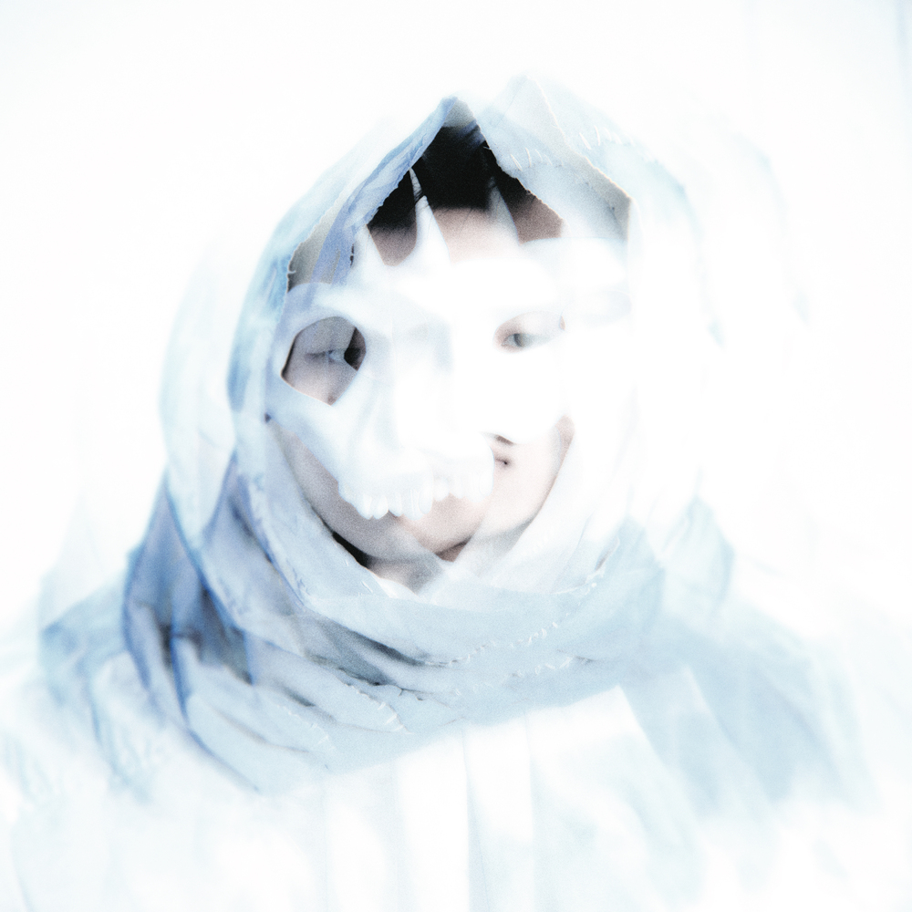
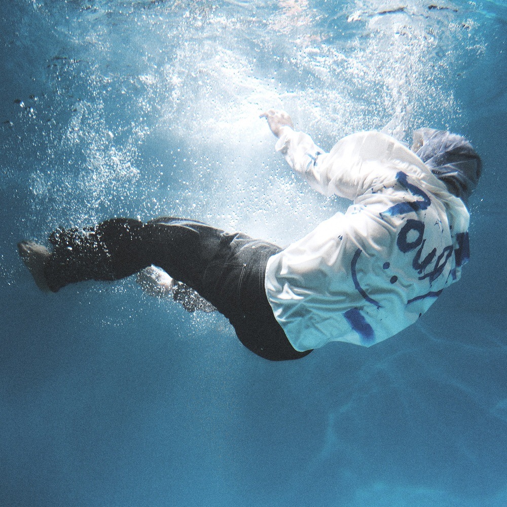
이번에는 마브님의 차례로 넘어가 보겠습니다. [Souly]를 기점으로 이름을 알리게 되셨잖아요. 앨범에 대해 소개해 주시면 좋을 것 같습니다.
마브 사실 [Souly]는 원래 표기가 ‘Seouly’였어요. 서울에 관한 이야기를 많이 담고 싶었거든요. 당시 저는 수도권에서 생활하고 있었고, 여행도 많이 다니는 편도 아니었어요. 그래서 내가 살아가는 공간인 서울이 어떤 의미를 가지고 있는지, 그리고 이 안에서 느끼는 감정이 무엇인지를 음악으로 담아보고 싶었어요. 동시에 그런 솔직한 이야기를 아프로비츠 사운드 위에 얹어보고 싶다는 생각도 있었고요.
힙합은 워낙 레퍼런스가 많잖아요. 특정 비트를 듣는 순간 다른 래퍼들의 이미지가 자연스럽게 떠오르고, 그들의 삶이나 태도를 따라가게 되는 관성이 있어요. 저는 학원 강사를 하기도 했고, 학교에 다니기도 했고, 어떻게 보면 굉장히 평범한 삶을 살고 있었거든요. 교육하는 사람이면서 동시에 배우는 사람. 제 삶은 그런 모습인데 가사에서는 전혀 다른 사람의 삶을 상상하면서 이야기하고 있는 거예요. 어느 순간 조금 지치더라고요. 반면 아프로뮤직은 다른 방식으로 다가왔어요. 주제도 자연이나 영성, 종교적인 이미지처럼 위로를 주는 요소들이 많았고요. 그래서 ‘나도 이런 음악을 해보고 싶다’라는 생각이 들었어요.
결국 [Souly]는 제 꿈, 제가 느끼는 감정, 지금 처한 상황에 대한 이해 같은 이야기들을 담은 앨범이에요. 어떻게 보면 굉장히 소박한 이야기들이죠. 그게 저만의 색깔이 될 수 있겠다고 느꼈어요. 특별한 계산 없이, 아주 솔직한 마음으로 만든 앨범이라고 할 수 있을 것 같습니다.
그렇다면 마브님은 아프로뮤직에 어떻게 빠지게 되신 건가요?
마브 아프로뮤직을 처음 들었을 때는 ‘좋다’보다는 ‘어렵다’라는 생각이 먼저 들었어요. 따라 불러보려고 해도 어렵고, 직접 뱉어보려고 해도 어렵더라고요. 근데 제가 어려운 게 있으면 더 해보고 끝까지 파고들어 보려는 스타일이거든요. 그 복잡한 감정이 계속 저를 끌어당겼던 것 같아요.
원래 힙합 잘 안 들었을 때도 플레이리스트에 아프로 뮤직이나 뭄바톤 같은 음악이 있었거든요. 자메이카나 아프리카 계열 음악들을 꾸준히 들었는데, 발음도 재밌고 리듬도 재밌으니까 계속 새로운 영감을 주더라고요. 어느 순간 그냥 내가 직접 해보자는 생각이 든 거죠. 당시에는 팩을 알기 전이었는데, 제 주변에서는 페노메코 형이 그런 방향의 음악을 먼저 하고 계셨어요. 나아가 마침 그 시기가 제가 기존 힙합 사운드에 조금 권태를 느끼고 있던 시기이기도 했고요. 그래서 아프로비츠로 새로운 무언가를 만들어보자는 욕심이 생겼고, 자연스럽게 빠져들게 된 것 같습니다.
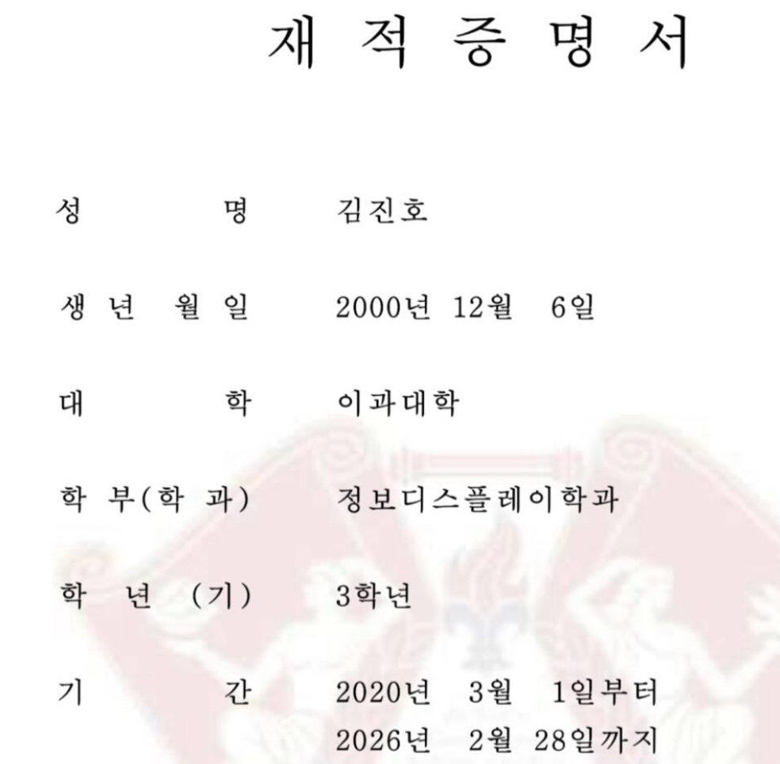
최근 인스타그램에 음악에 집중하기 위해 학업활동을 잠시 쉬기로 했다는 내용과 함께 재적증명서를 올리셨잖아요.
마브 조금 오해하시는 분들이 계시는데, 학교를 완전히 그만둔 게 아니라 잠시 멈춘 상태예요. 휴학과 비슷하다고 보시면 됩니다. 제가 그걸 SNS에 올렸더니 생각보다 큰 반응이 일더라고요(웃음). 제가 이걸로 말하고 싶었던 건 ‘나 쇼미더머니 반짝으로 끝나고 싶지 않아요. 이걸 계기로 더 많은 걸 해보고 싶어요.’라는 결심에 가까웠어요. 저는 낮에는 공부하고 밤에는 음악하면서 ‘해야 하는 일’과 ‘하고 싶은 일’ 사이에서 오랫동안 헤매고 있었던 사람이었어요.
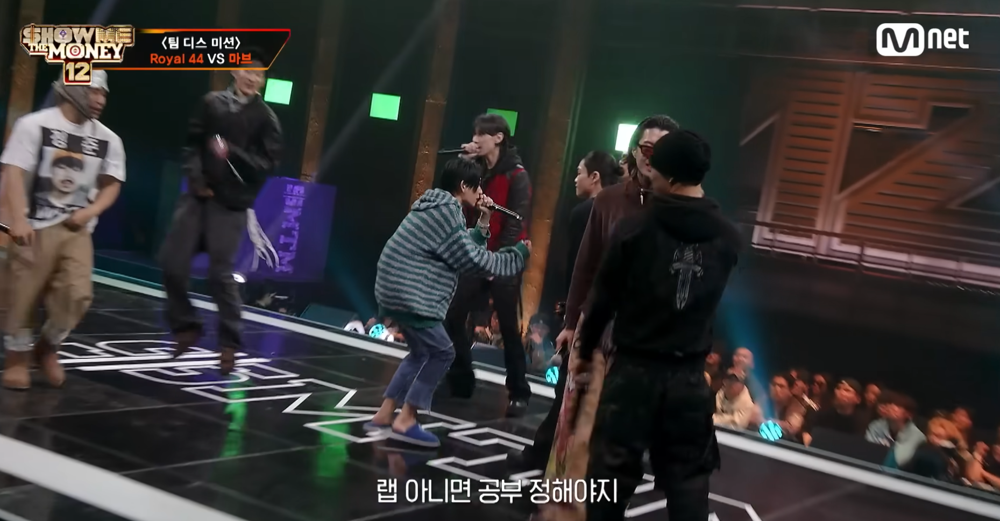
근데 쇼미더머니에에서 로얄 44랑 디스 미션을 가졌을 때 ‘랩 아니면 공부 정해야지’라는 가사가 저한테 엄청 크게 꽂혔어요. 사실 다른 가사는 잘 기억이 안 나는데 그 말만은 정확하게 들었어요(웃음). 왜냐면 당시의 제가 그 고민을 하고 있었으니까요. 어느 쪽을 선택해야 하는지 정하고 싶어서 쇼미더머니에 나온 거였거든요,
감사하게도 지금은 음악을 선택할 수 있는 근거가 조금 더 커졌어요. 이런 인터뷰도 하게 되고, 공연도 하고, 앨범도 계속 만들 수 있고, 팬분들도 조금씩 생기고 있어요. 이런 경험이 쌓이면서 조금 더 음악에 시간을 써도 되겠다는 확신이 생겼어요. 그 게시물은 학교를 포기하겠다는 선언이라기보다, 음악에 더 책임감을 가지고 집중해 보겠다는 다짐에 가까웠습니다. 졸업은 할 겁니다(웃음).
팩 님은 논문을 아프로 뮤직 관련으로 작성하셨다고 하셨잖아요. 어떤 주제를 다루셨나요?
팩 아프로 뮤직, 그중에서도 아프로비츠를 기반으로 현재 대중음악 시장에서 나타나고 있는 변화와 성과, 그리고 앞으로의 가능성에 대해 다룬 논문이었어요. 당시 제가 논문을 준비하면서 가장 흥미롭게 느꼈던 건 팝 음악 시장의 흐름이었거든요. 조금 과장해서 표현하면, 저는 그때 ‘전통적인 의미의 팝이 죽어가고 있다’는 느낌을 받았어요. 지금 생각하면 되게 흥미로운 표현인데, 당시 스포티파이나 애플뮤직 같은 플랫폼을 계속 보다 보니까 특정한 흐름이 보이는 거예요. 예전에는 Taylor Swift같은 거대한 팝스타들이 시장을 이끌었다면 어느 순간부터는 라틴 음악이 뜨고, 케이팝이 뜨고, 또 아프로비츠가 주목받기 시작하더라고요. 그래서 ‘왜 이런 현상이 나타나는 걸까?’를 고민하게 됐어요.
제 생각에는 기존 팝 시장이 어느 정도 고착화되면서 사람들이 점점 새로운 문화권으로 시선을 돌리기 시작한 것 같았어요. 말하자면 음악 시장의 관심이 계속 제3세계 문화권으로 확장되고 있는 흐름이 보인 거죠. 마침 그 시기에 저는 아프로비츠 음악을 하고 있었고, Tyla나 Wizkid 같은 아티스트들이 세계적으로 주목받기 시작했거든요. 그래서 논문에서도 미국, 유럽, 프랑스 같은 해외 사례들을 먼저 다루고, 한국 사례도 함께 분석했죠. 당시 르세라핌의 “Smart” 같은 곡도 언급했고, NCT의 음악처럼 아프로 계열 리듬을 차용한 케이팝 사례들도 정리했어요.
그리고 논문이다 보니까 필자의 사례-제 경험도 일부 포함했어요. 제가 직접 아프로뮤직을 만들고 있었고, 주변에도 같은 흐름을 시도하는 아티스트들이 있잖아요. 페노메코 형의 [Organic]이라던가 마브의 [Souly]같은 사례도 함께 언급했고, 제가 음악 활동을 하면서 경험한 이야기들도 일부 담았어요. 결론적으로는 아직 시장 규모 자체는 크지 않지만, 충분히 성장 가능성이 있는 영역이라는 내용으로 정리했던 기억이 납니다.
마브 ‘팝이 파편화되고 있다.’ 굉장히 공감돼요. 예전처럼 모두가 같은 음악을 듣는 시대가 아니라, 각자의 취향과 문화권이 점점 더 세분화되고 있다는 느낌이 있거든요. 그 과정에서 케이팝도 하나의 흐름이 됐고, 아프로 뮤직도 급격하게 성장하고 있고요.
‘팝의 파편화’라는 키워드가 관심이 가네요. 두 분은 이러한 현상의 직접적인 원인이 어디에 있다고 생각하세요?
마브 저는 일단 콘텐츠 자체가 많아졌다고 생각해요. 예전처럼 소수의 스타가 대중의 관심을 독점하기에는 매력적인 것들이 노출될 수 있는 경로가 너무 많아졌어요. 그 중심에는 틱톡이나 쇼츠 같은 짧은 영상 플랫폼이 있고요. 예전에는 음악을 만들기 위해 필요한 비용 자체가 높았잖아요. 지금도 제대로 된 녹음실에서 한 세션을 진행하면 적지 않은 비용이 들지만, 이제는 100만 원 이하의 장비만 있어도 상당한 수준의 결과물을 만들 수 있어요. 플러그인이나 믹싱 기술도 많이 발전했고요. 결국 음악 제작 자체가 훨씬 쉬워진 시대가 된 거죠. 그러다 보니 예전처럼 Taylor Swift 같은 ‘중앙집권형 아티스트’가 모든 관심을 독점하는 구조가 점점 약해질 수밖에 없다고 생각해요.
오히려 지금은 니치 마켓(Niche market-틈새시장)이 더 중요해지는 시대 같아요. 힙합에서 동부, 서부처럼 지역성을 내세우던 흐름이 있는 것처럼, 미국은 지금도 지역 기반의 음악이 계속 주목받고 있거든요. 각 지역과 문화가 가진 고유한 색깔을 얼마나 잘 보여주는지가 중요해지고 있는 거죠. 아프로뮤직도 그렇고요. 언어, 말투, 문화, 외형적인 특징까지 굉장히 뚜렷한 정체성을 가지고 있잖아요.
케이팝 역시 마찬가지라고 생각해요. 케이팝의 가장 큰 경쟁력은 트레이닝 시스템도 그렇고, 제작 방식도 그렇고 세계 최고 수준으로 발전한 비즈니스 모델이라고 봐요. 그래서 지금의 파편화는 결국 각자의 색깔이 더욱 중요해지는 흐름이라고 이해하고 있습니다.
팩 저는 틱톡의 영향도 크지만, 스트리밍 플랫폼의 등장이 더 결정적이었다고 생각해요. 스포티파이만 들어가도 처음 들어보는 아티스트를 계속 추천해 주잖아요. 예전에는 누군가를 알기 위해 거대한 방송이나 미디어를 거쳐야 했다면, 지금은 알고리즘이 대신 큐레이션을 해주는 시대가 된 거죠. 침대 옆에 마이크 하나, 맥북 하나만 있어도 음악을 만들 수 있는 시대이기도 하고요.
실패했을 때 감당해야 하는 리스크가 너무 크니까 이미 거대한 스타가 된 사람들은 오히려 새로운 시도를 하기 어려워요. 그래서 계속 비슷한 음악이 반복되는 경우도 많다고 생각해요. 이런 현상이 이어지다 보니 사람들이 새로운 무언가를 갈망하게 된 거죠.
그리고 마브가 말한 ‘중앙집권형 아티스트’라는 표현을 빌려서 이야기하면(웃음), 이제는 그런 스타들에게 공감이 잘 안되는 시대가 된 것 같아요. 예를 들어 며칠 전 멧 갈라 같은 행사를 보면서도 그런 생각을 했어요. 물론 멋있고 화려하죠. 그런데 SNS를 보면 갑자기 햄버거 먹는 사진을 올리기도 하잖아요. 근데 저는 가끔 그런 모습이 정치인의 유세처럼 느껴질 때가 있어요. ‘우리도 여러분과 똑같답니다?’라고 말하는 것 같지만, 실제 삶은 전혀 다르잖아요. 우리는 햄버거를 먹으러 걸어가지만, 그들은 전용기를 타고 가는 사람들이니까요. 그 괴리가 더 이상 사람들에게 설득력 있게 다가오지 않는 것 같아요.
마브 결국 지금은 ‘판타지’보다 ‘공감’을 원하는 시대인 것 같아요. 유행은 항상 돌잖아요. 어떤 시대에는 스타를 우상처럼 바라보고, 그들의 삶을 동경하기도 했죠. 근데 지금은 사람들 삶이 너무 팍팍해요. 남의 판타지를 보면서 마냥 감탄하거나 우상화할 여유가 없는 거죠. 그래서 오히려 나와 비슷한 상황에서 고군분투하는 사람들의 이야기를 더 흥미롭게 바라보는 것 같아요. 흔히 말하는 ‘언더독 서사’ 같은 것들. 완벽한 성공담보다, 현실 속에서 버티고 성장하는 사람들의 이야기에 사람들이 더 크게 반응하는 시대가 된 것 같네요.
동시에 예전에는 미디어 방향 자체가 완전한 탑다운 방식이었다면, 지금은 어느 정도 수평화가 이루어졌잖아요. 그러다 보니까 사람들이 자기 취향에 맞는 사람이나 콘텐츠를 직접 탐색할 기회도 훨씬 많아졌고요. 그 과정에서 아까 말씀해 주신 것처럼, 결국 나와 코드가 맞는 사람, 공감할 수 있는 사람, 혹은 같은 언더독 위치에 있는 사람들을 더 응원하게 되는 흐름도 생긴 것 같아요. 여러 가지 현상이 같이 움직이고 있는 느낌인데, 저는 그중에서도 MTV 폐국이 굉장히 결정적인 사건이었다고 생각하거든요.
팩 맞아요. 그게 레거시 미디어가 죽었다는 완벽한 선언 같았어요. 되게 재밌는 게, MTV 처음 개국했을 때 나왔던 노래가 “Video Killed the Radio Star”잖아요. 비디오가 라디오 스타를 죽였다는 이야기였는데, 지금은 틱톡이 비디오 스타를 죽인 셈인 거죠. 그러니까 저는 MTV 폐국이 새로운 시대의 시작을 선언한 사건처럼 느껴졌어요.
마브 이제는 마이클 잭슨의 “Thriller” 같은 걸 보기 어려운 시대인 것 같아.
팩 문워크도 보기 힘들겠네.
마브 롱샷이 잘해주겠죠. 새로운 마이클 잭슨이 되어줬으면 좋겠습니다(웃음). MTV의 폐국처럼 미래에는 영상 길이 비도 9대 16가 표준이 될 수도 있을 것 같아요.
결국 계속 발전하면서도 돌고 도는 시대상인 것 같아요. 근데 “중앙집권형 아티스트”라는 표현 계속 기억에 남네. 되게 강렬해요. 자주 써먹어야겠다(웃음).
팩 얘가 이상한 말 진짜 잘 만들어요.항상 만들어내는 워딩이 폭력적이야(웃음)
마브 원래 비유를 별생각 없이 막 던지는 편이라서요(웃음). 이제는 봉건제 시대가 됐네요.
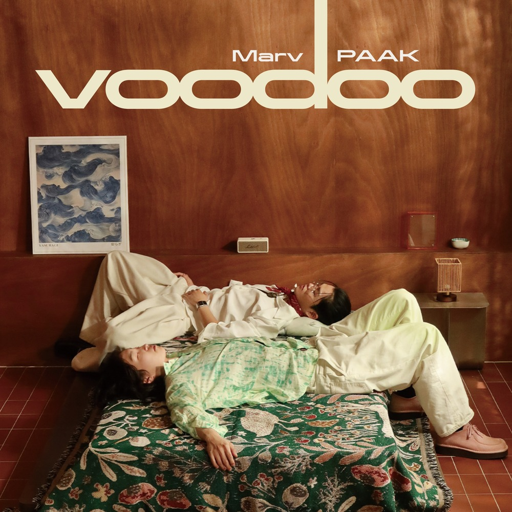
이러한 두 분이 함께 만든 새로운 싱글이 바로 “VooDoo”입니다. 곡에 대해서 각자 짧게 소개를 한번 부탁드릴게요.
팩 “VooDoo”는 쇼미더머니 듀오 미션에서 만들었던 곡입니다. 크러쉬 형님께서 프로듀싱을 맡아주셔서 탄생할 수 있었던 곡입니다. 제목인 ‘부두(Voodoo)’가 주술이라는 뜻이잖아요. 저희 둘 다 꿈을 향해서 계속 달려가고 있는 상황인데, 오늘 하루만큼은 홀린 듯 편하게 놀아보자는 느낌을 담아봤습니다.
마브 아쉽게도 방송에는 나오지 못했어요. 중앙집권형 레거시 미디어에 노출되지는 못한 거죠. 근데 저희 같은 봉건형 아티스트들은 알아서 뮤직비디오 찍고 열심히 할 수 있습니다(웃음). 많이 관심 가져주셨으면 좋겠습니다. 참고로 저는 쇼미더머니 정말 사랑합니다(웃음).
사실 이 곡이 방송에는 나오지 못하게 된 거잖아요. 흔히 말하는 통편집이 된 케이스인데, 그럼에도 이 곡을 직접 공개하기로 한 특별한 계기가 있었을까요?
마브 원래 이 곡의 기획 자체는 팩이 “VooDoo”를 내고 제가 옆에서 도와주는 정도의 그림이었어요. 근데 곰곰이 생각해 보니까 저도 욕심이 나는 거예요. 좀 열받는 감정도 있었고요(웃음). 우리 둘 다 진짜 열심히 준비했고, 퀄리티에 만족했고, 다른 참가자분들도 다 좋다고 얘기해 줬는데 결과적으로는 통편집돼서 아무도 모르는 곡이 돼버린 거잖아요. 비트랑 저희 목소리, 탑라인 합이 너무 좋다고 느꼈고, 계속 욕심이 생기더라고요. 이건 꼭 내야겠다 싶었던 거죠. 제가 직접 크러쉬 형한테 비트 클리어를 받으러 갔는데 형이 흔쾌히 비트를 제공해주셨고, 발매까지 이어지게 되었습니다.
듀엣 미션 때 마브님이 아프로비츠 비트가 있었으면 좋겠다,라고 아까 말씀하셨는데 실제로 그 비트가 “VooDoo”의 비트인 거잖아요. 크러쉬님이 미리 비트를 준비해두신 상태였던 거네요?
마브 그렇죠. 크러쉬 형이 2차 심사 때부터 자꾸 저한테 계속 아프로비츠 할 거냐고 물어보시는 거예요(웃음). 그때는 이 형이 아프로비츠 좋아하는구나- 정도로 생각했는데 3차 듀엣 미션이 송캠프 형식이었잖아요. 비트가 20개 정도 있고, 참가자끼리 팀을 짜서 곡을 만드는 구조였는데 그 참가자 중에서 아프로비츠를 하는 사람이 사실상 저랑 팩 둘뿐이었던 거예요. 그래서 이거 그림 나오겠는데? 싶었는데, 진짜로 아프로비츠 비트가 있었고. 결과적으로는 형들이 던져준 힌트를 잘 따라간 느낌이었던 것 같아요(웃음).
팩 실제로 크러쉬 형님께서 그 무대가 끝나고 사실 이거 우리 둘 하라고 준비하신 거였다고.
마브 헨젤과 그레텔 과자 따라가는 것처럼 과자 계속 먹으면서 과자 집까지 도착한거죠(웃음).
비하인드 스토리 재밌네요(웃음). 아까 팩님이 말씀해 주셨던 것처럼 달려가는 와중에 잠깐 홀린 듯 쉬어가자는 이야기가 담겨 있잖아요. 이걸 풀어가는 방식, 팩님이 가사를 쓰는 방식이랑 마브님이 가사를 쓰는 방식이 확실히 다르게 느껴졌는데, 각각 어떤 부분에 중점을 두셨는지 궁금합니다.
팩 일단 언어가 다르고요.
마브 한국어 좀 써.
팩 노력하고 있어(웃음).
저는 꿈을 향한 사랑, 헌정 같은 느낌으로 가사를 썼어요. 예를 들어 ‘I keep that international money for you / From Paris London Seoul city too’ 누군가는 이걸 연인에게 하는 말로, 누군가는 꿈에게 하는 말로 받아들일 수 있는 거죠. 일부러 중의적으로 열어두었어요. 제가 사랑하는 음악에게 바치는 발라드 같은 감정으로요. 저는 약간 돌려 말하는 스타일인데, 그런 면이 이번 가사에도 잘 드러난 것 같아요.
마브 저 같은 경우는 팩보다 조금 더 직관적으로 ‘꿈’이라는 키워드에 집중해 음악에 진심인 저의 모습을 최대한 담아보았습니다. 특히 꿈을 이루는 과정에서 내가 받은 것들에 대한 감사함 같은 감정이 떠올랐어요. 꿈을 향해 달려가는 이야기를 쓰는 사람 입장에서는, 그 과정에서 도움을 준 사람들의 이야기를 빼놓을 수가 없으니까요.
두 분의 대비가 되게 인상적이었어요. 특히 팩님 같은 경우에는 가사에서 전공을 굉장히 많이 살리셨더라고요.
팩 감사합니다. 그걸 알아봐 주셔서(웃음).
저도 이 인터뷰 준비하면서 조금 찾아봤는데, 이번 곡에서 사용하신 언어가 이보어랑 요루바어였죠? 나이지리아에서 대표적으로 많이 쓰이는 언어가 하우사어, 이보어, 요루바어 이렇게 세 가지잖아요. 이런 언어들이 아프로 뮤직 안에서 어떤 식으로 사용되는지 이야기해 주시는 것도 되게 유익할 것 같아요. 실제로 아프로뮤직에서 자주 등장하는 요소이기도 하고요.
팩 이게 어떻게 보면 제가 과감하게 했던 시도 중 하나일 수도 있어요. 너무 학술적으로 들리면 안 되니까 최대한 쉽게 설명해 볼게요. 하품하시면 안 됩니다(웃음).
영어, 프랑스어, 스페인어가 다 라틴어로부터 뻗어 나왔잖아요. 나이지리아 언어도 비슷해요. 니제르-콩고 어군로부터 파생된 언어들이거든요. 근데 그 안에서도 결이 조금 달라요. 요루바어는 조금 더 딱딱한 느낌이고, 이보어는 상대적으로 더 부드러운 느낌이 있어요. ‘염소’로 예로 들자면 이보어로는 Ewu(에우), 요루바어로는 Ewúrẹ́(에우레), 이런 식으로 발음이 붙는 케이스가 많아요. 단순하게 말하면, 조금 더 단단하게 들리느냐 아니면 부드럽게 들리느냐 정도로 받아들이시면 편할 것 같아요.
제가 실제로 음악에서 사용하는 건 ‘피진 영어’에 가까운데, 이건 자메이카식 영어랑 비슷해요. 영어에 부족 언어가 섞인 형태라 문장 구조나 문법도 일반 영어랑 많이 달라요. 나이지리아가 식민 지배를 겪으면서 영어를 기본적으로 사용할 수밖에 없었잖아요. 그 과정에서 브로큰 잉글리시 계열의 새로운 언어 체계가 만들어진 거예요. 이를 바탕으로 음악을 만들고 있다고 생각해 주시면 될 것 같습니다.
간결하고 쉽게 설명해 주셔서 감사합니다. 아마 인터뷰 보시는 분들께도 많은 도움이 되었을 거예요.
팩 저희 교수님께서 나이지리아, 콩고 출신분들이셨거든요. 기억나는 일 중 하나가, 예전에 수업이 갑자기 취소된 적이 있었어요. 교수님이 방학 때 콩고에 가셨는데 현지에서 내전이 일어나면서 여권 문제 때문에 한국으로 못 돌아오신 거예요. 그 정도로 저희는 실제 그 문화권 사람들이랑 가까이 붙어 있는 환경이었고, 또 아프리카라는 대륙 자체에 대한 편견을 깨는 수업들도 굉장히 많이 들었어요.
그래서 저도 진짜 단어장 들고 공부하고 음악 만들고, 다 만들면 교수님들한테 들려드렸어요. 교수님들 춤출 때까지 계속 가져다드리면서 수정했던 기억이 나네요. 근데 지금 옆에 있는 친구가 코를 고시는 거 같은데.
마브 아니야. 감탄 중이었어 왜그래(웃음).
팩 그런 경험들을 통해 지금 제가 가진 색깔을 더 강하게 드러낼 수 있던 것 같아요. 보통 대부분의 아티스트들이 자기 색깔을 조금씩 덧입혀가는 느낌이라면, 저는 오히려 반대인 것 같아요. 처음에는 제 색을 엄청 강하게 보여준 다음, 거기서 조금씩 덜어내는 방식에 가까운 것 같아요.
일반적인 경우와는 반대인 셈이네요.
팩 진짜 세게 말하면 저는 현지 음악과 거의 동급의 음악을 만들어보고 싶었고, 거기서부터 조금씩 물을 빼면서 한국어를 점점 섞어보려 하는 과정에 있는 것 같아요.
누군가는 ‘처음엔 엄청 전문적으로 하는 듯 하더니, 안 먹히니까 대중적으로 가는 거 아니냐’ 같은 삐딱한 시선으로도 볼 것 같네요(웃음).
팩 물론 그 부분도 생각해 본 적 있어요. 근데 아까 저희가 이야기했던 것처럼 어떤 문화를 대중화시키고, 사람들이 자연스럽게 받아들이게 만들려면 결국 ‘물을 빼는 과정’ 역시 중요하다고 생각해요. 제가 예전에 했던 음악이 궁금한 사람들은 결국 다시 찾아 들을 거라고 생각하거든요
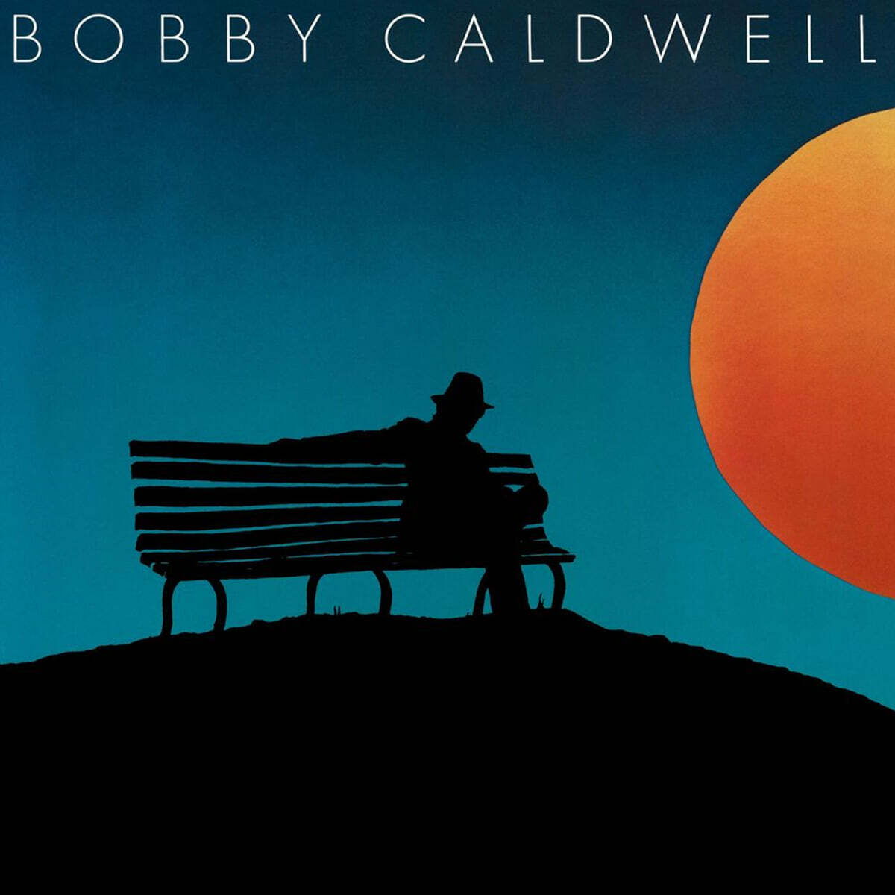
제 예전 곡들은 대부분 굉장히 강한 색채를 가지고 있고, 실제로 제가 한국인이 아닌 줄 아는 분들도 많았어요. 어느 정도 의도한 부분이기도 했고요. 제가 좋아하는 Bobby Caldwell이라는 가수가 있는데 소울 음악을 하던 백인이거든요. 당시에는 사람들이 그걸 눈치채지 못하도록 앨범 커버를 실루엣 이미지로 냈어요. 그러다가 라이브 공연에 가보면 무대 위에 백인 한 명이 서 있는 거죠. 저도 약간 그런 감각을 선호했던 것 같아요. 내 음악을 들어보고, 나이지리아 사람인지 흑인인지 백인인지 직접 찾아봐라. 그런 식으로 사람들로 하여금 저를 한 번 더 디깅하게 만드는 접근을 해보고 싶었던 거예요.
이제는 방송에 나가면서 얼굴도 공개됐고, 제가 한국인이라는 것도 다 알려졌잖아요. 그래서 지금은 제 에스니시티(Ethnicity) 자체를 숨기기보다는, 오히려 한국인으로서 어떻게 이런 장르의 음악을 풀어갈 수 있을지를 고민하는 과정에 가까운 것 같아요. 쉽게 말하면, 예전처럼 엄청 강한 색의 음악이 듣고 싶으면 제 옛날 곡들을 들어주시면 될 것 같습니다(웃음).
옆에서 계속 감탄 중이신 마브님은 어떠세요?(웃음)
마브 저는 팩처럼 그렇게 철두철미한 스타일은 못 되는 것 같아요(웃음). 거창한 접근법이 있는 건 아니고, 그냥 지금 느끼는 걸 담자는 쪽에 가까워요. 저는 어떤 과정을 먼저 설계하고 움직이기보다는, 일단 만들어놓고 나중에 풀어가는 스타일인 것 같거든요. 작업할 때나 릴리즈할 때도 사실 처음부터 큰 계획이 있는 편은 아니에요. 그냥 내가 지금 이걸 하고 싶으니까 하는 거예요.
다만 너무 개인적인 전략이나 계산이 많이 들어가게 되면 오히려 접근성이 떨어지거나 아쉬워질 수 있다고 생각해요. 그래서 저는 만들 때 가장 중요하게 생각하는 게, 그 순간의 감정이 출발점이 되어야 한다는 거예요. 그리고 두 번째는 그 감정이 최대한 손실 없이 전달될 수 있도록 퀄리티를 높이는 데 노력하는 거고요. 근데 솔직히 앞으로의 행보가 어떻게 될지는 잘 모르겠네요(웃음). 갑자기 아프로 뮤직을 안 하게 될 수도 있는 거고요. 저는 되게 유동적인 사람이라서요.
예를 들어 Kanye West 같은 사람도 장르가 Kanye가 될 수 있는 이유가, 항상 사운드보다 감정을 먼저 두는 사람이기 때문이라고 생각하거든요. Drake랑은 조금 다른 느낌이에요. Drake는 어느 순간부터 음악에 대한 접근 방식이 눈에 익는데 Kanye는 예상이 안 되잖아요. 저는 따지면 이쪽이 더 편한 것 같아요. 팩처럼 “나는 아프로뮤직을 해야겠다”라는 확실한 계기가 있던 것도 아니고, 그냥 지금의 저한테 이 사운드가 가장 잘 맞는 상태인 거죠. 사람도 옷 입는 스타일이 계속 바뀌고, 다이어트하면 원래 입던 옷이 안 맞게 되잖아요. 저는 음악적인 영감도 그런 식으로 계속 변한다고 생각해요. 그래서 작업 과정 자체에서는 전략을 크게 생각하지 않는 편이에요.
대신 만들어놓은 뒤에 사람들을 설득하는 과정, 그러니까 포장 과정을 굉장히 중요하게 생각해요. 말이나 인터뷰 같은 것들까지 포함해서요. 그런 부분은 최대한 준비를 많이 하려고 하는데, 앞으로 그 전략이 어떻게 바뀔지는 저도 아직 잘 모르겠습니다(웃음).
장르를 먼저 정해놓고 작업하시는 게 아니라, 지금 내 상황과 감정에 가장 잘 어울리는 음악이 아프로 뮤직이었기 때문에 지금 이 음악을 하고 있다는 것에 가까운 거네요. 나중에 돈 많이 벌고 트래퍼 되면 또 트랩을 하실 수도 있는 거고.
마브 중앙집권형 아티스트가 될 수도 있.. 농담입니다(웃음).
제가 아직은 음악으로 돈 버는 법을 잘 모르는 사람이기 때문이기도 한 것 같아요. 그런 걸 잘 알아야 더 큰 아티스트가 될 수 있는 거라고 생각해서 공부는 하려고 하는데, 아직은 소속사도 없고 시스템적인 부분에 대해서 잘 모르는 상태거든요. 저랑 같이 음악하는 친구들도 일단 멋있는 걸 만들어야 의미가 있다는 철학이 강한 사람들이에요. 저도 이런 부분에서 영향을 많이 받은 것 같고요. 그래서 지금은 전략보다는, 일단 제가 가장 빠르고 멋있게 나올 수 있는 음악들을 만들자는 쪽에 가까워요. 일단 작업량부터 늘리자, 그런 느낌이죠. 릴리즈 전략 같은 건 나중에 회사가 생기면 도움받게 되지 않을까 싶어요.
이야기를 듣다 보면 완전히 감정만 따라가는 스타일이라기보다는, 그 감정을 전달하는 과정 자체를 굉장히 치밀하게 준비하시는 거네요.
마브 맞아요. 일단 감정이 생긴 이후에는 그게 최대한 훼손되지 않도록 덧칠하는 과정에 굉장히 신경 많이 써요. 앨범 커버라든지, 시각화 방식이라든지, 인터뷰에서 어떻게 설명할지 같은 것들이요. 결국 그 감정이나 앨범의 서사가 손실 없이 전달되게 만드는 과정에는 되게 공을 많이 들이는 편이에요.
어떻게 보면 굉장히 이상적인 절충안 같네요.
마브 근데 사실 이게 이상적인 전략이 되려면 결국 성적이 받쳐줘야 하잖아요.이 인터뷰 보시는 분들이 제발 이 전략이 이상적인 전략이 될 수 있도록 많이 사랑해 주셨으면 좋겠습니다(웃음).
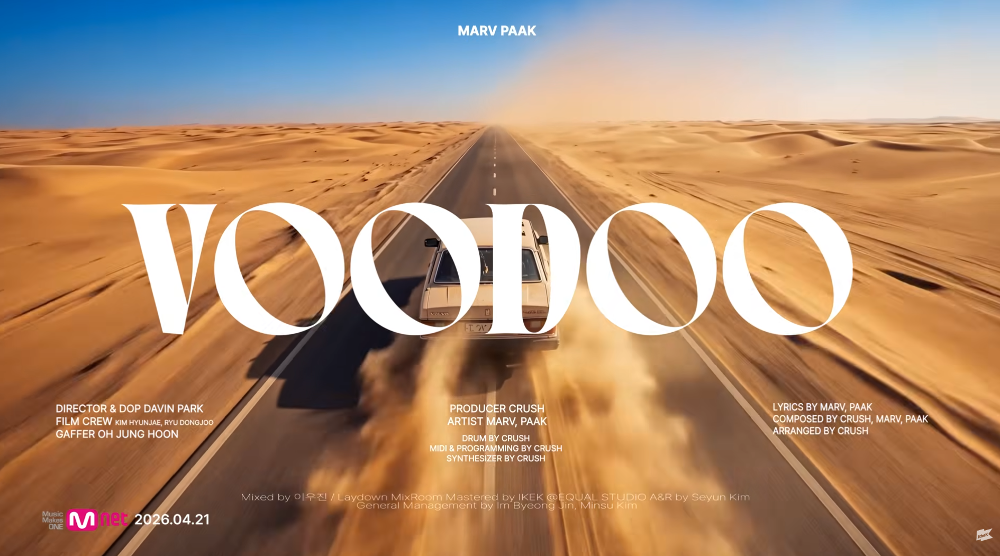
결국 결과도 중요하니까요(웃음). 그래서 이번 싱글도 뮤직비디오도 따로 촬영할 정도로 많은 공을 들이신 거잖아요. 뮤직비디오는 어떤 콘셉트로 작업하게 되신 건가요?
팩 먼저 뮤직비디오를 찍어주신 다빈 감독님께 정말 감사드립니다!
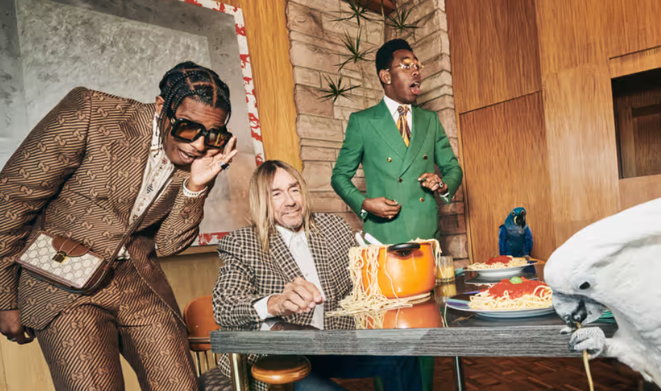
뮤직비디오 같은 경우는 저희가 어떠한 그림으로 담을지 방향을 많이 이야기했어요. 저는 색감이 굉장히 풍부했으면 좋겠다고 생각했는데, 그래서 레퍼런스를 엄청 많이 찾아봤거든요? 그중에 A$AP Rocky랑 Tyler, The Creator, Iggy Pop이 같이 찍은 화보가 있더라고요. 이런 레퍼런스를 계속 찾아보면서 장소 디깅도 했어요. 각자가 이상적인 공간을 이야기하면서 계속 의견을 주고받았고, 시놉시스도 만들고 자동차나 소품 같은 것도 붙여가면서 점점 완성해 갔어요. 뮤비에 타고 나온 차도 매니저님의 올드스쿨 볼보예요(웃음). 사막을 달리는 장면에서는 AI도 활용해 봤어요. 그런 식으로 최대한 로우한 환경 안에서 가장 번뜩이는 크리에이티브를 끌어낼 수 있는 방향으로 작업했던 것 같아요.
마브 진짜 뮤직비디오에 힘을 엄청 많이 줬어요. 제가 이 뮤비에서 원했던 바이브가 정확히 있었거든요. 둘 다 각자의 주인공성이 있으면서도 합도 너무 좋고 서사도 좋고 곡 자체도 굉장히 아름다운 결과물로 나와 정말 만족스러웠어요. 다빈 감독님도 정말 고생 많이 해주셨고, 팩이나 회사 분들 포함해서 다 같이 엄청 힘써주셔서 굉장히 예쁜 뮤직비디오가 나온 것 같아요. 너무 감사하죠.
아까 뮤직비디오 이야기하시면서 사막 장면 같은 데에 AI를 많이 활용했다고 말씀해 주셨잖아요. 요즘은 진짜 전방위적으로 AI가 활용되고 있는데, 엔터테인먼트나 예술 분야에서의 AI 활용에 대해서는 어떻게 생각하세요?
마브 저는 되게 좋은 것 같아요. AI가 하지 못하는 게 무엇인지 정확히 아는 것이 중요하다고 생각해요. 이걸 알고 쓴다면 AI는 정말 훌륭한 도구입니다. 예술이라는 게 결국 머릿속에 있는 걸 어떻게 잘 구현하느냐의 싸움이니까요. 그 과정에서 AI는 정말 훌륭한 비서 역할을 해준다고 느껴요.
제가 창작 과정에서 AI를 가장 많이 활용하는 방식이 대화하는 거거든요. 가사 거리나 음악의 서사, 세상이 돌아가는 방식 같은 걸 이해해 보려 할 때 많은 대화를 가져봐요. 주로 제미나이랑 챗GPT를 같이 쓰는데, 챗GPT는 말을 되게 잘하고 제미나이는 데이터양이 방대해요. 이것들을 활용하면서 느끼는 건 아티스트로서 제 철학을 더 단단하게 만드는 데 매우 큰 도움이 된다는 거예요. 클릭 몇 번만으로 방대한 정보량과 전문성을 가진 존재와 계속 대화를 나눌 수 있잖아요. 저한테는 진짜 좋은 영감이 돼요.
뮤직비디오에서 AI를 활용한 것도 비슷한 맥락이에요. 저희 상황에서 실제로 사막에 가 볼보를 끌고 촬영하는 건 거의 불가능하잖아요. 근데 AI를 활용하면 머릿속에 있는 이러한 이미지들을 구현할 수 있게 되는 거죠. 저는 그런 점에서 AI가 되게 좋은 기술이라고 생각해요. 불가능을 깨주는 도구에 가깝죠.
팩 지금 대한민국뿐 아니라 전세계적으로 AI를 안 쓰는 직업군은 거의 없다고 생각하거든요. 근데 반대로 왜 러다이트 운동이 일어났는지도 이해가 가요(웃음). ‘이거 완전 증기기관 때려 부수던 시대로 다시 돌아가는 거 아니야?’ 같은 생각도 들어요.
저도 가사 아이디어나 작업할 때 AI를 진짜 많이 쓰거든요. 저는 SUNO랑 챗GPT를 많이 써요. SUNO같은 경우는 요즘 스템 추출도 되니까 여자 목소리가 필요하면 제 목소리를 여성 보컬처럼 변환하는 식으로 활용해 보기도 해요. 결국 인간이 직접 구현하기 어려운 걸 가능하게 만든다는 점에서는 아까 마브가 말한 게 맞다고 생각해요. 원래라면 엄청난 돈이 들어갈 작업을 월 구독제 정도 비용으로 해결할 수 있다는 사실만으로도 저는 되게 감사하거든요.
그리고 음악 이야기로 다시 돌아가 보면, 요즘 AI 음악 진짜 많잖아요. AI 가수가 빌보드 차트 들어가는 일도 생기고요. 저는 사람들이 언젠가는 그런 것들에 염증을 느끼게 될 시기가 올 거로 생각해요. 그래서 라이브 쇼나 밴드 공연 같은, 사람이 실재하는 음악으로 다시 사람들이 몰리게 될 것 같아요. 나라는 사람의 입지를 공고히 만들고 있으면 AI에 지친 사람들이 언젠가 내 음악을 들으러 오겠지? 하는 생각들.
마브 그래서 AI의 발전이 오히려 인간을 더 인간답게 만드는 방향일 수도 있다고 생각해요. 러다이트 운동 이야기한 것처럼 반감을 느끼는 이유도 이해는 가요. 앞으로 인간을 정의하는 개념 자체가 많이 바뀔 것 같아요. 자신의 자아나 개성이 거의 개입되지 않는, 반복적인 일만 하는 직군은 훨씬 빠르게 대체될 가능성이 높잖아요. 이런 분야에서는 AI 때문에 사람들이 일자리를 잃게 될 테니까 당연히 억울할 수 있다고 생각해요. 하지만 결국에는 AI를 잘 활용하여 반복적인 일은 기계에 맡기고, 인간은 아이디어를 더 창출해 내며 미감을 살리는 쪽에 집중할 수 있는 방향으로 갈 것이라고 느껴요. 결국 세상이 더 아름다워지는 방향으로 나아갈 것으로 생각합니다.
아까 마브님께서 AI가 못하고 인간만이 할 수 있는 일이 있다고 하셨잖아요.두 분이 생각하시기에 “이건 AI가 절대 인간처럼 못할 것 같다”라고 느끼는 부분이 있을까요?
마브 ‘선택’인 것 같아요. 챗GPT 써보신 분들은 알겠지만, AI는 답변 1과 답변 2중에서 스스로 선택을 못 해요. 결국 인간이 선택하게 만들어요. 근데 선택이라는 건 결국 ‘내가 무엇을 원하는가’에서 나오거든요. AI는 사용자의 취향에 맞춰주려고 하지 자기 욕망이 있는 존재는 아니에요. 자아도 없고 욕심도 없는 거죠. 사람들이 어떤 선택을 더 많이 하느냐, 덜 하느냐에 따라서 유행도 바뀌고 미감도 바뀌고 트렌드도 달라지는 거잖아요. 저는 결국 그 선택을 하는 능력이 인간이 가장 잘할 수 있는 영역이라고 생각해요.
예를 들어 아까 이야기했던 SUNO 같은 경우도 주제랑 가사를 입력하면 트랙이 몇 개씩 쭉 나오거든요. 근데 그중 어떤 음악이 더 좋은지 선택하는 건 결국 인간이 하는 일이에요. 그리고 그 선택을 더 잘하는 사람들이 결국 미감이나 예술적인 경쟁력이 높다고 평가받게 되겠죠. 피카소도 자기가 쓸 물감을 아무렇게나 고르진 않았을 거 아니에요. 이런 ‘선택의 차별성’이 인간을 인간답게 만들어주는 것 같아요.
다르게 말하면 ‘욕심’에 기반한 선택이겠네요. AI는 ‘논리적으로 어떤 선택이 더 효율적인가’에 대해서는 답을 줄 수 있지만, 인간의 선택은 꼭 논리만으로 움직이지 않잖아요. 결국 자기가 원하는 게 있고, 하고 싶은 게 있으니까요. 예를 들어 ‘학교를 쉴까’ 같은 문제도 논리적으로만 보면 쉬지 않는 게 맞다고 할 수도 있는데(웃음).
마브 논리적으로는 졸업 먼저 하는 게 이득이죠(웃음). 근데 이런 비효율적인 선택들이 결국엔 뉴노멀이 되기도 하잖아요. 많은 사람들이 지지하기 시작하면 새로운 기준이 되는 거니까요. 근데 AI는 그런 식으로 뉴노멀을 만들어낼 정도의 의지나 효율성은 없는 것 같아요. 애초에 설계 자체가 그렇게 되어 있지 않으니까요.
팩님은 어떻게 생각하세요?
팩 아니 저는 ‘삼각지역 2번 출구 낙원분식 정금자 할머니 손맛’ 이런 얘기하려고 했는데 이야기가 너무 딥해졌어요(웃음).
진짜 그런 손맛은 아무나 못 따라 하는데(웃음).
팩 너무 이공계적인 질문이라 저한테는 좀 어렵지만, 저는 결국 ‘이야기를 전달하는 방식’은 AI가 완전히 대체할 수 없을 것 같다는 생각이 들어요. AI는 결국 AI고, 인간은 다 각자 자기만의 삶을 살잖아요. 누군가는 캐나다에서 살다 왔고, 누군가는 또 다른 환경에서 살아왔고, 마브도 자기만의 삶이 있듯이요. AI는 그런 데이터를 모아 무언가를 만들어낼 수는 있겠지만, 그 사람만이 가진 고유한 가치를 새로 만들어내지는 못할 거라고 생각해요. 저는 AI가 좋은 고기에 소금과 후추를 더해주는 것처럼 양념 역할은 할 수 있다고 생각해요. 근데 그 고기 자체를 만들어내지는 못하는 거죠.
팩님이 말씀하신 것을 정리해보면 인간의 서사, 문화의 맥락, 이런 것들이 AI가 대체할 수 없는 부분이라고 생각하시는거네요.
팩 제가 문과다보니(웃음).
할머님의 손맛이라고 했을 때 딱 받아들였어요. Shout out to 정금자여사님. …근데 실제 계신 분인가요?
팩 그냥 막 지어낸 말입니다.
아니 진짠줄 알았는데(웃음),
팩 김진짜와 팩구라 같은 느낌(웃음). 이런 것들 마저도 인간이기에 할 수 있는 거짓말 아닐까요?
마브 아니 근데 AI 너무 구라 잘 쳐. 할루시네이션 엄청나.
어떻게 보면 이런 참거짓을 판별할 수 있는 사람이 AI를 더 잘 활용할 수 있겠네요.
마브 AI한테 먹힌 사람은 제가 봤을 때 경쟁력이 좀 딸리지 않을까 싶어요.
팩 선택이라는 맥락에서도 맞는 말인 것 같아요. 옳고 그름을 알아야 선택할 수 있으니까.
마브 세상이 더 철학적으로 변할 거라고 생각해요. 철학은 AI가 새로이 만들어내기 힘든 부분인 것 같아서.
팩 마브도 수학 가르친 적 있고, 저도 영어 가르쳤다고 했잖아요. 근데 요즘 메타글래스같은 도구는 영어를 들으면 자동으로 번역을 띄워준대요. 쓸 땐 편하겠죠. 근데 충전하는 동안에는 까막눈으로 살게 되는 거잖아요. 결국 배움이 되게 중요하다고 생각해요. AI를 모든 상황에서 항상 쓸 수 있는 건 아니니까. 기본 지식을 갖춰야 활용을 할 수 있다는 생각입니다.
두 분 이야기하는 거 들어보면 진짜 코드가 잘 맞는 것 같네요(웃음). 그래서 이번 싱글 하나로 끝나기엔 아쉽다는 생각도 드는 것 같아요. 앞으로도 두 분이 같이 활동하거나, 계속 함께할 계획 같은 게 있을까요?
마브 네, 있습니다. 저는 열려 있어요.
팩 저도 열려 있습니다. 제가 더 열심히 해서 따라가야죠.
한 곡 안에서 주도권 싸움이 벌어지겠네요(웃음)
마브 줄다리기 빠방해서 경쟁 좀 해보겠습니다(웃음).
그럼 이번 싱글에서는 누가 주도권을 가져갔다고 생각하세요?
마브 이번 싱글은 진짜 딱 반반이었던 것 같아요. 쇼미더머니 때부터 훅도 같이 만들었고 각자의 매력이 너무 달랐거든요.
지금은 두 분 다 각자 개인 활동도 활발하게 준비중이시잖아요. 마브님은 5월 6일에 빅나티님과 함께한 싱글 “Star*”를 공개했습니다.
마브 원래 제 앨범 [Souly. (deluxe)]에 수록되어 있던 곡이에요. 처음에는 큰 의미를 둔 곡이 아니었는데, 시간이 지나면서 제일 사랑하는 곡이 돼버렸어요. 이때의 제가 약간 멍청해 보여서요(웃음). 이 곡에는 스타가 되고 싶다는 열정만 가득하지, 정작 ‘스타가 뭔지’는 잘 모르는 사람의 모습이 담겨 있거든요. ‘내가 죽어야 별이 된다면 지금이라도 좋아’라는 가사가 나오는데 사실 스타라는 게 그렇게 완성되는 게 아니잖아요.
이걸 우주로 비유하면 ‘행성’과 ‘항성’의 차이 같은 거예요. 당시의 저는 행성의 입장에서 곡을 썼던 것 같아요. 항성은 스스로 빛을 내는 존재지만, 행성은 항성 주변을 돌잖아요. 우상화된 존재를 바라보는 느낌이죠. 지구와 태양으로 예를 들면 저는 태양을 계속 바라보는 지구 같은 사람이었던 거예요. 지금은 “나도 항성이 되겠다. 스스로 빛을 내겠다”라는 방향으로 생각이 바뀐 것 같아요.
스스로 빛을 내는 항성이 되려면 에너지가 있어야 하잖아요. 저는 그 에너지를 예술적인 영감, 열정으로 표현했어요. 끊임없이 저에 대해 홍보하고, 이야기하는 움직임이 저를 스타로 만드는 에너지라고 생각해요. 그게 꺼지면 스타로서의 빛도 사라지는 거고요. 크든 작든 결국 스타는 그래야 한다고 생각해요. 그래서 ‘진짜 스타에게 이 이야기를 부탁해 보자’는 생각을 하게 됐고, 그때 떠올랐던 사람이 당시 연락 중이던 빅나티님이었어요.
커리어도 저랑 되게 비슷하다고 느꼈거든요. 상징적인 아이템으로 사람들 기억 속에 각인됐고, 쇼미더머니를 통해 한 번에 큰 하입을 얻었다는 점도 비슷했고요. 목소리를 사용하는 방식이나 음악에 대한 지향점도 꽤 닮아 있다고 느꼈어요. 마침 아프로비츠도 좋아하신다고 해서 “Star*”의 두 번째 벌스를 새로 만들고 지금의 내가 생각하는 스타에 관한 이야기를 이 사람과 함께 해보자는 접근으로 작업한 곡이에요.
공교롭게도 곡 공개 당시에 한창 디스전으로 시끄러웠죠.
마브 사실 그거 때문에 걱정도 많았어요. 이 곡의 의미가 왜곡되거나, 음악보다 논란을 먼저 보게 될까 봐요. 실제로 그런 반응도 있었고요. 다행히 시간이 지나면서 사람들도 이 곡을 음악 자체로 봐줄 여유가 생겼고, 결과적으로는 곡의 의도나 예술적인 방향이 크게 흐트러지지 않은 채 잘 전달된 것 같아 다행이었어요.
그리고 하필 사건이 있던 날이 “VooDoo” 뮤직비디오 촬영 바로 전날이었거든요(웃음). 밤새 걱정하다가 뮤직비디오 찍으러 갔어요.
팩 저는 꿀잠 자고 촬영했습니다(웃음).
팩님도 다음 앨범을 구상하고 계시다고 들었어요.
팩 제가 개인적으로 발표했던 곡들은 굉장히 하드한 아마피아노(Amapiano) 음악이었어요. 거의 현지 음악에 가깝게 접근했던 작업들. 근데 마브 덕분에 많은 분들이 아프로비츠라는 장르를 좀 더 많이 알게 되었잖아요. 그러다 보니 저도 자연스럽게 여러 생각을 하게 되더라고요.
처음에는 그 연장선으로 아마피아노 중심의 앨범을 만들 생각도 있었어요. 작업물도 어느 정도 준비돼 있었고요. 그런데 한편으로는 내가 음악을 만들 때 느끼는 안정감을 내 노래를 듣는 사람들과 나눴으면 좋겠다는 생각이 들었어요. 이번 앨범은 6월 말이나 7월 초 발매를 목표로 잡고 있는데, 여름이 막 시작되는 시기잖아요. 그래서 “행복한 봄을 보내셨길 바라요. 그리고 행복한 여름도 보내세요.” 같은 인사를 건네는 기분으로 만들고 있습니다.
아까도 이야기 드렸지만, 저는 아프로비츠를 기반으로 더 다양한 방향으로 나아가고 싶다는 생각이 있어요. 기본 베이스는 아프로비츠예요. 하지만 그 안에서 새로운 요소들 또한 조금씩 보여주고 싶어요. 예전에는 원어를 많이 사용했다면, 이제는 그 과정 속에서 한국어도 조금씩 섞어보고 있고요. 그래서 이번 앨범은 저에게도 일종의 과도기 같은 작품이 될 것 같아요. 제가 어떤 방향으로 확장해 나갈지를 보여주는 과정이 담긴 음악들.
다음 단계로 나아가기 위한 과정에 있는 작품이라고 볼 수 있겠네요. 궁금한 점이 생겼는데, 결국 음악이라는 것도 환경이나 계절의 영향을 많이 받잖아요. 아프로 뮤직을 하는 아티스트로서, 겨울에는 어떤 음악을 하고 싶으세요?
팩 이 부분은 편집해주세요. 저희가 사실 약간 여름에 계곡에서 백숙 파는 사람들 같은 느낌이 있거든요(웃음). 계절 특수 무조건 받아야 돼요.
마브 난 [Souly] 1월에 냈는데?
팩 잘났다(웃음). 아무튼 겨울에는 아프로비츠를 기반으로 제 음악세계를 더 넓게 확장해 보고 싶어요. 원래 블랙뮤직 자체를 정말 좋아하거든요. D’Angelo, Leon Thomas 같은 음악도 좋아하고요. 겨울에는 아소토 유니온 “Think About' Chu”같은 리얼 사운드 기반 음악, 혹은 조금 더 진한 소울과 R&B에 도전해 보고 싶어요. 겨울에 어울리는 음악을 의도적으로 생각하는 건 아니지만, 자연스럽게 그런 방향으로 가게 될 것 같아요.
계속해서 확장에 대한 이제 열망이 있으신 거군요.
팩 뿌렸던 씨앗이 뿌리를 내리고, 나무처럼 여러 방향으로 가지를 뻗어가는 모습을 만들어보고 싶어요.
마브 팩이랑 생각은 비슷한데 제 갈래는 조금 달라요. 저는 사이키델릭을 더 좋아하거든요. Funkadelic, James Brown 같은 계열이요. 아까 계곡 백숙 이야기가 진짜 재밌는 비유인 게, 여름에는 진짜 그런 음악이 나와요. 일부러 노리는 게 아니라 계절이 그렇게 만들어요. 여름에 공연장 가면 그런 사운드들이 들려요. 저도 여름용 플레이리스트와 겨울용 플레이리스트가 따로 있거든요. 여름 플레이리스트에는 아프로비츠가 압도적으로 많고, 가을이나 겨울처럼 추워지면 락이나 사이키델릭을 더 찾게 돼요. 특히 블랙 사이키델릭 계열. Lil Yachty의 [Let's Start Here.]나 Childish Gambino의 [Awaken, My Love!]같은 앨범들.
그리고 여름 되면 닭백숙 팔러 가고(웃음). 아니 우리 너무 가벼워 보이는거 아냐?
팩 우리 지금 거의 학술 인터뷰였어. 중앙집권형 아티스트부터 시작해서 AI까지 나와가지고(웃음).
마브 근데 원래 다른 아티스트분들이랑도 이렇게 깊게 들어가나요?
이야기가 재밌어지면 이렇게 들어가곤 해요. 닭백숙같은 가벼운 이야기는 인스타에 올리고, 학술적인 이야기는 풀버전으로 홈페이지에 올리겠습니다(웃음). 그렇다면 두 분이 보셨을 때, 한국 블랙뮤직 씬 안에서 아프로뮤직은 앞으로 어떤 방향으로 확장될 거라고 생각하시나요?
마브 저는 지금의 아프로뮤직이 전문가 영역에 가깝다고 느껴져요. 접근성이 생각보다 낮은 장르인 것 같거든요. 그 이유가 음악이 별로여서라기보다는 그냥 어렵기 때문인 것 같아요. 제가 직접 작업해보면서 느낀 건데, 제가 해본 음악들 중에서 아프로 뮤직이 일정 수준 이상의 퀄리티에 도달하기까지 가장 오랜 시간이 걸렸어요.
힙합이나 팝은 그래도 비교적 빠르게 뼈대가 잡히는 편이었는데, 아프로뮤직은 비트 만드는 단계부터 막막하더라고요. 어디서부터 시작해야 할지 감이 잘 안 오는 느낌이 있어요. 앞으로는 한국 팝 시장이나 인디 음악 시장 안에서, 하나의 전문 장르로 자리 잡으면서도 동시에 다양한 음악 안으로 자연스럽게 스며들지 않을까 생각해요. 리듬이나 악기 구성 같은 요소들이 팝이나 인디 음악 안에 녹아드는 방식으로요.
팩 저도 동의해요. 예전에 마브가 인터뷰에서 한 말이 있는데, 아프로뮤직을 두고 “비주류 올림픽 종목 같다. 지금 시작하면 탑5 안에는 들어갈 수 있다”라고 했거든요. 근데 지금 한국에서 아프로뮤직으로 많이 비춰지는 사람이 마브, 저, 그리고 페노메코 형 정도인데, 셋 다 접근 방식이 비슷하면서도 또 달라요. 제가 진짜 순혈주의자 느낌으로 깊게 파고든다면, 마브나 페노메코 형은 중간 지점에 있는 느낌이거든요.
그래서 대중 입장에서는 아직 “어렵다”라고 느낄 수 있겠지만, 반대로 확장성은 진짜 큰 장르라고 생각해요. 왜냐하면 리듬만 가져올 수도 있고, 보컬 운용만 차용할 수도 있고, 챈트처럼 활용할 수도 있거든요. 그래서 개인적으로는 R&B 씬에 계신 분들이 많이 시도해보셨으면 좋겠어요. 아프로뮤직이 새로운 돌파구나 확장 요소로 자연스럽게 스며들 수 있다고 생각해요.
마브 저는 팝적인 성향이 강한 힙합 아티스트들이 많이 시도해 봤으면 좋겠어요. 아프로뮤직이 생각보다 부담 없이 접근할 수 있는 장르입니다. 어떻게 보면 굉장히 정통적인 블랙뮤직에 가깝기도 하고요. 리듬감 때문에 힙합을 좋아하는 이유랑 아프로뮤직을 좋아하는 이유가 크게 다르지 않다고 생각해요. 랩 하는 분들은 기본적으로 리듬에 민감하잖아요. 그래서 아프로비츠 위에 직접 랩을 얹어보면 생각보다 훨씬 재밌게 느끼실 거라고 생각해요. 그 리듬이 주는 쾌감이 있거든요.
팩 실제로 Burna Boy나 Wizkid도 여러 아티스트들과 계속 협업하고 있고요.
마브 Dave, Central Cee, Drake같은 아티스트들도 이미 적극적으로 활용하고 있으니까요. 점점 더 자연스럽게 섞여 들어가지 않을까 생각합니다.
어떻게 보면 지금 두 분이 아프로 뮤직이라는 블루오션 안에서 핵심 플레이어로 떠오르고 있는 셈이네요.
팩 약간 세팍타크로 국가대표 같은 느낌(웃음).
마브 근데 워낙 잘하는 분들이 많아요. 지금이야 저희만 보일 수 있지만, 이 장르가 대중화되고 나면 누가 선발주자였는지는 그렇게 중요하지 않을 것 같아요. 오히려 다 같이 열심히 만들면서 ‘코리안 아프로뮤직’이 어떤 모습인지 만들어가는 게 더 중요하다고 생각해요. 한국어와 결합했을 때 나오는 재미있는 요소들도 분명히 있을 거고요.
팩 꿈이 하나 있는데, 스포티파이 플레이리스트에 ‘K-아프로’ 같은 카테고리가 생겼으면 좋겠어요. K-R&B도 있고, 여러 지역 기반 플레이리스트들도 있잖아요. K-아프로나 Afro Pop Korea 같은 플레이리스트가 스포티파이나 애플뮤직 공식 큐레이션으로 생겼으면 좋겠다는 꿈을 갖고 음악을 만들고 있는 것 같아요.
보통 비주류 장르 음악을 하는 분들이 “이 장르만의 독자적인 씬을 만들고 싶다”는 이야기를 많이 하거든요. 방금 말씀하신 K-아프로 같은 것도 비슷한 맥락이고요. 두 분이 생각하시기에 K-아프로 씬이 실제로 형성되기 위해서는 무엇이 필요할까요?
마브 일단 플레이어만으로는 안 돼요. 힙합도 래퍼들만으로 만들어진 문화가 아니잖아요. DJ도 있고, 댄서도 있고, 여러 구성원이 함께 있었죠. 근데 무엇보다 중요한 건 결국 관객인 것 같아요. 이 음악을 즐기고, 이 문화를 소비할 사람들이 실제로 존재하느냐가 가장 중요하죠.
그리고 아까 이야기한 것처럼 아프로 뮤직 자체가 사실은 전문가 영역에 가까운 음악이라고 생각해요. 농담으로 세팍타크로 국가대표라고 이야기하지만, 사람들이 많이 시도하지 않는 데는 이유가 있어요. 어렵거든요. 그래서 K-아프로 씬이 생기려면 결국 기존의 음악 씬 안에서 자라나야 한다고 생각해요. 특히 팝, 힙합, R&B 씬이 많이 시도해 줬으면 좋겠어요. 그분들이 스포트라이트를 넓혀주고, 그걸 계기로 관객들이 “이거 재밌네?” 하고 들어올 수 있게 되면 가장 이상적일 것 같거든요.
제가 5월 15일에 열었던 파티도 그런 의도가 있어요. 플레이되는 음악의 비율을 대략 아프로 70, 힙합 30 정도로 가져가고, 출연진은 힙합 아티스트들 위주로 구성했거든요. 사람들이 블라세 형 보러 오고, 노선 형 보러 오고, DJ 보러 오고, 스페셜 게스트 보러 올 거예요. 와서 음악들을 즐기는데 그 중에 아프로 음악이 섞여 있어요. 그리고 본인이 그 음악을 즐기고 있다는 걸 느끼게 되면, “어? 이거 재밌네?” 하고 생각할 수 있잖아요. 이것들이 “이런 음악 또 들으려면 어디로 가야 하지?”로 이어지는 거죠. 이런 시도가 앞으로 더 많아졌으면 좋겠어요. 저도 공연할 때 국내 아프로 아티스트들을 초대하거나, 댄서들과 무대를 같이 꾸미거나 하면서 사람들에게 조금씩 소개해 보려 하고 있습니다.
팩 저는 가끔 이 상황이 레이지 장르가 처음 생겨나던 시기랑 비슷하다는 생각도 해요. 원래 한국에는 거의 없던 장르였는데, 어느 순간 Trippie Redd나 Playboi Carti의 음악이 들어오면서 사람들이 호기심을 갖기 시작했잖아요. 한 명의 슈퍼스타가 등장하면 그 장르의 뿌리가 생기고, 거기서부터 확장성이 만들어진다고 생각하거든요. 물론 그 역할을 제가 하면 좋겠지만(웃음) 현실적으로는 모두가 같이 힘을 내야죠.
마브 한 명이 하면 안 돼.
팩 맞아요. 한 명이 하면 힘이 딸려요. 그래서 여기저기서 계속 나와줘야 해요. 힙합 아티스트들도 한 번씩 시도하고, 자연스럽게 접할 기회가 많아져야 하는 것 같아요. 결국 사람들 귀에 익숙해져야 하고, 이 문화를 즐기는 사람들이 많아져야 해요. 물론 지금은 비주류의 영역이지만 저는 선망의 대상이 될 가능성도 충분히 있다고 생각하거든요.
그리고 지금 전자음악이 굉장히 강세잖아요. 저는 개인적으로 아프로뮤직이 전자음악의 반대편에 있지 않나 생각해요. 저 같은 경우는 전자음악 플레이리스트를 오랫동안 듣는 게 쉽지 않거든요. 아프로 뮤직처럼 오가닉한 음악을 상대적으로 오래 듣게 돼요. 언젠가 사람들로부터 이런 편안하고 오가닉한 음악에 대한 수요가 반드시 생길 거라고 생각해요. 그걸 크게 느꼈던 게 슈퍼볼 배드 버니 공연이었어요. 뭄바톤 기반 음악이지만, 굉장히 문화적인 힘을 발산했잖아요. 한국에서도 꽤 화제가 됐고요.
마브 ‘비움의 미학’으로도 와닿을 것 같아요. 레이지는 기본적으로 사운드가 계속 쏟아지잖아요. 에너지가 끊임없이 유지되는 구조에요. 근데 아프로비츠는 로그 드럼 빠르게 치고 빠지고, 퍼커션도 치고 나갈 때 구간이 비워져요. 채워질 때의 임팩트가 훨씬 커지는 거죠. 고저 차이가 있는 다이내믹이 생기거든요. 그래서 귀가 피로해진 사람들에게는 오히려 이런 ‘비어 있는 음악’이 더 매력적으로 다가갈 수 있다고 생각해요. 요즘은 너무 많은 것들이 과해지고 있다고 느끼거든요. 그래서 역으로 이런 음악들이 수혜를 받을 시점이 오지 않을까.
결국 계속 돌고 도는 거네요. 음악 이야기로 시작했는데 철학적인 이야기로 끝나는 인터뷰가 된 것 같아요. 너무 즐거웠습니다. 인터뷰도 마무리할 시간이 된 것 같은데요. 마지막으로 HAUS OF MATTERS 독자분들과 팬분들께 한마디씩 부탁드릴게요.
마브 저는 아시다시피 제적 상태고(웃음), 정말 열심히 해야 하는 시기라고 생각해요. 그래서 앞으로도 장르나 형식에 얽매이지 않고 다양한 활동을 겁 없이 해볼 생각입니다. 제 삶에서 어떤 부분들을 보여드릴 수 있을지, 그리고 제 안에 있는 것들을 어떻게 더 멋있게 표현할 수 있을지 고민하고 있어요. 더 솔직한 제 모습을 보여드리고, 더 많은 이야기들을 들려드릴 수 있도록 열심히 활동하려 합니다. 많이 관심 가져주셨으면 좋겠습니다.
팩 저라는 사람을 알리기 위해 정말 많은 노력을 하고 있고, 그 과정에서 많은 분들의 도움과 응원을 받고 있어서 감사한 마음이 굉장히 큰 요즘입니다. 그래서 이런 기대와 응원에 누가 되지 않도록 저도 더 열심히 하려고 합니다. 팩이라는 사람, 그리고 제가 하는 음악이 더 많은 분들에게 닿을 수 있도록 계속 노력할 생각입니다. 마브랑 저 둘 다 많이 사랑해 주셨으면 좋겠습니다(웃음). 비슷한 시기에 각자의 앨범이 나올 것 같은데, 두 앨범을 같이 들어보시는 재미도 있을 것 같아요. 많이 관심을 주셨으면 좋겠습니다.
마브 비교는 하지 말아 주세요. 누구 하나 질 수 있으니까(웃음).
팩 그냥 둘 다 즐겨주셨으면 좋겠습니다(웃음). 다가오는 여름도 행복하게 보내시고요. 감사합니다!
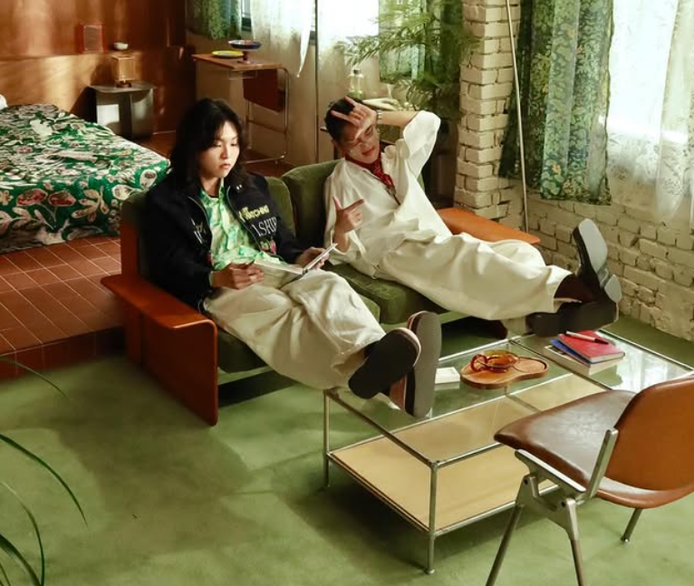